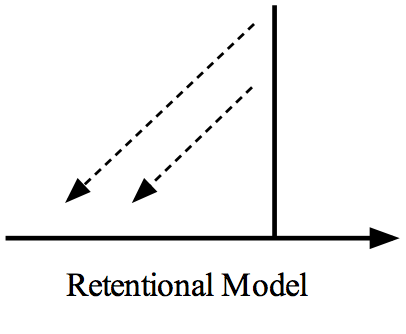
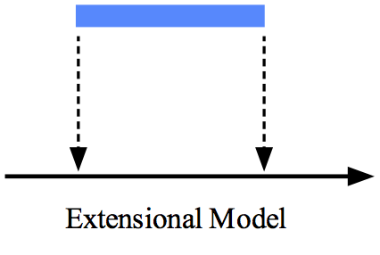
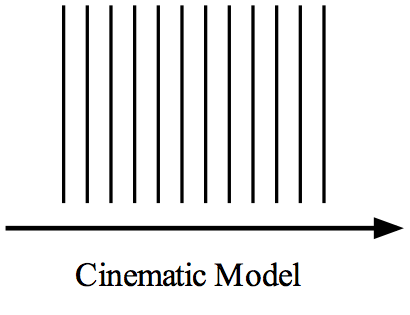

Temporal Consciousness
In ordinary conscious experience, consciousness of time seems to be ubiquitous. For example, we seem to be directly aware of change, movement, and succession across brief temporal intervals. How is this possible? Many different models of temporal consciousness have been proposed. Some philosophers have argued that consciousness is confined to a momentary interval and that we are not in fact directly aware of change. Others have argued that although consciousness itself is momentary, we are nevertheless conscious of change. Still others have argued that consciousness is itself extended in time. In this entry, the motivations and merits of these and other positions will be expounded and assessed.
- 1. Three Models of Temporal Consciousness
- 2. A Brief History
- 2.1 Augustine
- 2.2 Locke, Berkeley and Hume
- 2.3 Thomas Reid: common sense champion of PT-antirealism
- 2.4 Kant and Brentano: the emergence of Retentional models
- 2.5 Meinong and Stern: the emergence of the Extensional alternative
- 2.6 Hodgson, James and the Specious Present
- 2.7 Bergson, Husserl, Russell and Broad
- 3. Further Issues and Distinctions: Simultaneity, Immediacy and Continuity
- 4. Cinematic Models
- 5. Extensional Models
- 6. Retentional Models
- 7. Metaphysics of Temporal Consciousness
- Bibliography
- Academic Tools
- Other Internet Resources
- Related Entries
1. Three Models of Temporal Consciousness
1.1 Time and Consciousness
Time and consciousness are interwoven on several levels. From the vantage point of ordinary life and common sense, consciousness plainly seems to exists in time. When we hear the clock strike twelve, our auditory experience of it so doing also occurs at twelve (or at most a few moments later). Watching a 120 minute action movie results in a two hour stream of auditory and visual experiences (along with accompanying thoughts and feelings), and this stream runs concurrently with the playing of the movie. Quite generally, our conscious states, irrespective of their kind or character, seem to occur in the same temporal framework as the events in the wider world – even if their precise timing is not easy to ascertain. But this is by no means the whole story.
Our consciousness may be located within time, but there are also ways in which time or temporality might be regarded as manifest within consciousness. While watching a two hour movie, we will generally remain aware how much of the two hour period remains, even if we are paying no attention to the plot. We can judge the duration of temporal intervals, particularly short ones, with reasonable accuracy – an ability that psychologists have investigated in considerable detail (see Wearden 2016 for an overview). Our episodic (or autobiographical) memories supply us with access to our own pasts; thanks to such memories our earlier states of consciousness are not altogether lost to us: they can be recreated (or relived), albeit imperfectly, in our present consciousness. And of course there are past-oriented emotions, such as remorse or regret or shame: through these the past can influence our present feelings, often in powerful ways. While there is no future-directed counterpart of memory, we can anticipate future happenings (more or less accurately, more or less eagerly), and experience future-directed emotions: fear, dread, hope – and these too can exert a powerful influence of our present states of consciousness.
The story is still by no means complete, for temporality is manifest in consciousness in a further and more intimate way. In our ordinary experience, over brief intervals, we seem to be directly aware of temporally extended phenomena such as change, persistence and succession. When we see a friend waving goodbye, do we infer that their arm is moving, on the basis of having observed a motionless arm occupying a sequence of adjacent spatial location? We do make such inferences of this kind: if I see that my neighbour’s dustbin is in the middle of the road rather than its usual position on the pavement, I (rightly) infer that it has been moved. But the case in question is not at all like this: what we see is simply an arm in motion. (Is it for nothing that cinema is often called ‘the moving image’?) The same applies in other sensory modalities. When listening to a melody, we hear each note giving way to its successor; when we hear a sustained violin tone, we hear the tone continuing on, from moment to moment. If temporally extended occurrences such as these can feature in our immediate experience, it is natural to conclude that our awareness must be capable of embracing a temporal interval.
While this may seem obvious, it can also seem problematic. We can remember the past and anticipate the future, but we are only directly aware of what is present – or so it is natural to say and suppose. But the present, strictly speaking, is momentary. So if our awareness is confined to the present, our awareness must itself lack temporal depth. Hence we are led swiftly to the conclusion that our direct awareness cannot possibly encompass phenomena possessing temporal extension. We are thus confronted with a conundrum: it seems our awareness must extend over time, but it seems it can’t.
In grappling with this ‘paradox of temporal awareness’ as it is sometimes called, different philosophers have proposed quite different accounts (or models) of the structure of this form of temporal consciousness. Simplifying somewhat, the most commonly favoured options fall into three main categories:
Cinematic Model: our immediate awareness lacks any (or any significant) temporal extension, and the same applies to the contents of which we are directly aware – they are akin to static, motion-free ‘snapshots’ or ‘stills’. Our streams of consciousness are composed of continuous successions of these momentary states of consciousness. In this respect they are analogous to movies, which (as displayed) consist of rapid sequences of still images.
Retentional Model: our experiencing of change and succession occurs within episodes of consciousness which themselves lack temporal extension, but whose contents present (or represent) temporally extended intervals and phenomena. These episodes thus have a complex structure, comprising momentary phases of immediate experience, along with representations (or retentions) of the recent past. Our streams of consciousness are composed of successions of these momentary states.
Extensional Model: our episodes of experiencing are themselves temporally extended, and are thus able to incorporate change and persistence in a quite straightforward way. Our streams of consciousness are composed of successions of these extended ‘chunks’ of experience.
These labels are not standard – in this field there is little by way of terminological uniformity – but for present purposes they will serve (see Kon and Miller (2015) for a more fine-grained categorization). All three models are depicted in Figure 1 below. In each of the diagrams the horizontal line represents ordinary clock-time. Although the Retentional and Cinematic models both trade in momentary (or very brief) states of consciousness – in the diagrams such states are represented by thin vertical lines – these states are construed very differently. In the Cinematic case the momentary contents seem momentary, and are static (they contain no discernible motion or change); in the Retentional case the contents appear to possess a brief temporal depth, containing as they do experienced change and succession – hence the backward pointing arrows, intended to signify the way in which the recent past is supposedly ‘retained’ in present consciousness.
|  |  | |
|  | ||
Figure 1. The Three Main Conceptions of Temporal Consciousness.
In his influential writings on these matters William James argued that to make sense of our temporal experience we need to distinguish the strict (or mathematical) present from the from the experiential (or specious) present: whereas the first is indeed durationless, the second possesses a brief duration, sufficient to accommodate the change and persistence we find in our immediate experience. The Retentional and Extensional approaches can each be seen as implementing James’ proposal, albeit in very different ways.
Ascertaining where the truth lies among the differing accounts of the temporal contents of our immediate experience is interesting and intriguing in itself. Although most forms of experience seemingly feature succession and persistence – even the most primitive forms if James was correct in characterizing infant consciousness as a ‘blooming, buzzing confusion’ – it is not easy to understand how any form of experience can have such features. The interest and importance of the debate does not end here, for each of the accounts of temporal awareness on offer has significant, and very different, implications for our understanding of the general structure of consciousness. In this entry we will be exploring the principle features and motivations of the competing accounts, as well as their strengths and weaknesses.
1.2 Terminology, Problems and Principles
Although proponents of all three approaches are attempting to make sense of our experience of temporally extended phenomena, there are divergences on the issue of how precisely this experience should be construed, and on several related matters.
One significant divide is between those who believe that temporally extended phenomena really do figure in our immediate experience, and those who deny this. To coin some terminology:
Phenomeno-temporal Realism (PT-realism, sometimes further abbreviated to realism): change, succession and persistence can be directly perceived or apprehended.
Phenomeno-temporal Antirealism (PT-antirealism, sometimes further abbreviated to antirealism): change, succession and persistence cannot be directly perceived or apprehended.
The Extensional and Retentional models are the two principle forms of PT-realism. Proponents of the Cinematic model can subscribe to realism, but most do not. The task facing PT-antirealists is in one respect the easier of the two: unlike their realist counterparts, they are under no obligation to provide an intelligible account of how it is possible for our consciousness to embrace temporally extended phenomena. But in another respect their task is the more difficult. Antirealists are under an obligation to ‘save the (temporal) phenomena’: they need to supply a credible explanation as to why it seems so natural to say we perceive movement and change when, in actual fact, we do no such thing.
For realists it is important to distinguish the experience of succession from a mere succession of experiencings. An experience of succession involves a temporal spread of contents being presented together in consciousness, albeit in the form of a perceived succession rather than simultaneously. Hence both Extensional and Retentional theorists agree that a temporal spread of contents can be apprehended as a unity. To introduce some further terminology:
The Diachronic Unity Thesis: simultaneous contents can be experienced together, but so too can contents that appear to be successive (at least over short intervals).
Contents which are apprehended as unified in this way belong to a single specious present. Note the ‘appear to be successive’. This is needed to accommodate Retentional specious presents: although on a phenomenological level these seem to possess temporal extension, in reality they are housed in episodes of experiencing which are momentary, objectively speaking. Extensional theorists, by contrast, regard specious presents as extending a short distance through ordinary clock-time, in just the way they seem to.
2. A Brief History
2.1 Augustine
The confinement of immediate experience to a momentary present has a long and distinguished pedigree. In the preamble to his Lectures on the Consciousness of Internal Time Husserl tells us ‘The analysis of time-consciousness is an ancient burden for descriptive psychology and epistemology. The first thinker who sensed profoundly the enormous difficulties inherent in this analysis, and who struggled with them almost to despair, was Augustine’ (1991: 3). Irrespective of whether he was the first to dwell on such matters, Augustine’s labours in Book XI of the Confessions led him to espouse a position that is at least highly suggestive of the Cinematic conception outlined in §1. Augustine subscribed to the doctrine of Presentism (as it has latterly become known), i.e., he held that only what is present is real:
What now is clear and plain is, that neither things to come or past are. Nor is it properly said, “there be three times, past present and to come:” yet perchance it might be properly said, “there be three times: a present of things past, a present of things present, and a present of things future.” For these three do exist in some sort, in the soul, but otherwhere do I not see them; present of things past, memory; present of things present, sight; present of things future, expectation. (Gale 1968: 44)
Since for Augustine it was also clear that the present must be entirely without duration, and that our perception is restricted to what is present – ‘that only can be seen, which is’ (Gale 1968: 43) – we are led swiftly to the conclusion that we can perceive or experience only what is contained in a momentary present.
Augustine went further. If our consciousness is confined to the momentary present, how is it possible for us to know as much as we do about the duration of events or processes we live through? Augustine’s solution to this problem turns on the way memory and expectation can interact. For illustrative purposes he envisages himself on the verge of reciting a familiar Psalm. Before starting to speak all the verses are laid out before him in the form of expectations concerning what he is about to say; when part-way through his performance, the reciting of some verses is transferred from expectation to memory; as he continues to speak this transfer continues until the whole of the Psalm passes into memory: ‘thus the life of this action of mine is divided between my memory as to what I have repeated, and expectation as to what I am about to repeat.’ (Gale 1968: 52). Analogous considerations apply over shorter timescales (the experiencing of individual sounds and syllables) and over longer periods (a person’s entire life).
As we shall see, this reliance on a combination of momentary perceptual experience, memory and expectation in explaining our experience of temporality is typical of PT-antirealists.
2.2 Locke, Berkeley and Hume
Since we evidently possess concepts of persistence, succession and suchlike, one would expect philosophers who believe that our basic concepts derive their content from the content of our immediate experience – philosophers such as Locke, Berkeley and Hume – would incline in the direction of realism. And generally speaking, albeit with certain complications, this is what we find. In the Enquiry (1690) Locke writes:
It is evident to anyone who will but observe what passes in his own mind, that there is a train of ideas which constantly succeed one another in his understanding, as long as he is awake. Reflection on these appearances of several ideas one after another in our minds, is that which furnishes us with the idea of succession: and the distance between any parts of that succession, or between the appearance of any two ideas in our minds, is what we call duration. (Chapter XIV, 3)
As it stands, the import of this passage is not entirely clear, for it is not entirely clear what Locke mean when he talks of our ‘reflecting’ on successions of ideas (i.e., experiences). If reflection simply means introspection – i.e., the directing of our attention, the focusing of our introspective awareness – then for Locke succession is something of which we are directly aware. If ‘reflecting’ means ‘think about’ in the sense of reason about, there is no such implication. Other passages from the Enquiry tend to confirm the introspective construal. When explicitly defining ‘reflection’ Locke links it closely to attentive awareness: ‘By REFLECTION … I would be understood to mean, that notice which the Mind takes of its own Operations, and the manner of them, by reason whereof, there come to be Ideas of these Operations in the Understanding.’ (II, 1, 4) The introspective interpretation gains further support in this passage:
31 …. I think it is plain, that from those two fountains of all knowledge before mentioned, viz. reflection and sensation, we got the ideas of duration, and the measures of it. For, first by observing what passes in our minds, how our ideas there in train constantly some vanish and others begin to appear, we come by the idea of succession. Secondly, by observing a distance in the parts of this succession, we get the idea of duration.
Given that Locke’s defines consciousness itself as ‘the perception of what passes in a Man’s own mind’ (II, 1, 19), if we can observe (and hence perceive) succession in our own minds, we are surely conscious of it too.
The case for taking Locke to subscribe to realism looks strong.[1] Remarks along very similar lines can also be found in Berkeley: in section 98 of The Principles of Human Knowledge (1710) he tells us that ‘Time therefore [is] nothing, abstracted from the succession of ideas in our minds’. Hume’s position on the origin of our concept of succession is likewise broadly similar to that of Locke. In Book 1, Part II(§3) of his Treatise (1739) he writes:
… time cannot make its appearance to the mind, either alone, or attended with a steady unchangeable object, but is always discovered by some perceivable succession of changeable objects. (Treatise: 35)
… Five notes played on a flute give us the impression and idea of time; though time be not a sixth impression, which presents itself to the hearing or any other of the senses. (ibid., 36)
… the indivisible moments of time must be filled with some real object or existence, whose succession forms the duration, and makes it conceivable by the mind. (ibid., 39)
Although Hume agrees with Locke over the origin of our concept of succession, what he says about duration sits uneasily with Locke’s contention that we arrive at the latter concept by observing the distances between impressions. For Hume,
… the idea of duration is always derived from a succession of changeable objects, and can never be conveyed to the mind by any thing steadfast and unchangeable…. since the idea of duration cannot be derived from such an object, it can never in any propriety or exactness by applied to it, not can any thing unchangeable be ever said to have duration. (ibid., 37)
Since a period of (total) silence between the hearing of two sounds would not itself contain any change or succession – at least of an auditory kind – the concept of duration cannot be derived from this period of silence, or so Hume maintains. For an ingenious attempt to derive a consistent doctrine from Hume’s various (sometimes puzzling) remarks on time and temporal concepts in the Treatise see Baxter (2007); for further useful discussion see Bardon (2007).
2.3 Thomas Reid: common sense champion of PT-antirealism
Thomas Reid also takes issue with some of Locke’s claims in his Essays on the Intellectual Powers of Man (1785). For Locke succession is a more basic concept than duration – since we arrive at the concept of duration by reflecting on the distances between parts of successions – but Reid argues the reverse is the case. For a succession to exist at all, its parts – either particular impressions or the intervals between them – must themselves already have duration: for if these parts were all entirely lacking in duration, we would be dealing with a purely momentary phenomenon, and hence something which could not contain any kind of succession. Hence succession presupposes duration, and not vice-versa.
Reid’s second complaint concerns the role Locke assigns to reflection, construed as the awareness we have of the contents and operations of our own minds. Reid doesn’t dismiss this use of the term as illegitimate, but he does suggest it is a good deal narrower than the ordinary (and thus more proper) use, which allows reflection to encompass reasoning, judging, and remembering what is past. The latter is of particular relevance, for Reid goes on to argue without memory to inform us of what we have already experienced, we could never arrive at a concept of succession. Consequently, since ‘reflection’ construed in Locke’s narrow, quasi-technical way doesn’t involve memory, Locke was mistaken in thinking that reflection – of this sort at least – could ever furnish us with our concept of succession.
In arguing thus Reid is evidently assuming that our direct awareness is incapable of spanning even a brief temporal interval: if it could, we could directly apprehend successions, without relying on memory. His argument for this assumption is succinct, and on the face of it, quite plausible:
It may here be observed that, if we speak strictly and philosophically, no kind of succession can be an object either of the senses or of consciousness; because the operations of both are confined to the present point of time, and there can be no succession in a point of time; and on that account the motion of a body, which is a successive change of place, could not be observed by the senses alone without the aid of memory. (Intellectual Powers, Essay III, chapter V)
Since the claim that we are immediately aware only of what is present can seem common sense of the plainest sort, it is not surprising to find Reid endorsing it, and hence rejecting realism in favour of the antirealist alternative. Reid recognizes that it seems equally common sensical to say that we see bodies move – after all, we often talk in such terms: e.g., ‘I saw her waving her arm’. In response he argues that such talk is perfectly legitimate, provided it is construed in loose or popular sense, and not taken strictly and literally.
2.4 Kant and Brentano: the emergence of Retentional models
So far as the perception of change is concerned, matters are by no means as clear-cut as Reid suggests. Endorsing the plausible-seeming Augustinian doctrine that consciousness is confined to the present point of time does not oblige one to reject the (equally plausible) claim that change and succession feature prominently in immediate experience. These claims are quite compatible with one another provided the experience of change occurs within the confines of the momentary present. Indeed, in the eyes of some – but not all – this confinement is a necessary precondition for contents to be experienced together. For according to one influential line of thinking regarding phenomenal unity, in order for contents to be experienced as unified, they must be presented simultaneously to a single momentary awareness.
The obvious way of developing an account along these lines is to hold that momentary episodes of sensory consciousness are accompanied by a simultaneously existing array of representations (or retentions) of immediately preceding conscious states, and our awareness – at a single moment of time – of this combination of ingredients provides us with (what we take to be) a direct awareness of change and succession. Kant propounds something alone these lines in ‘The Synthesis of Reproduction in Imagination’ from the first Critique (1787):
… experience as such necessarily presupposes the reproducibility of appearances. When I seek to draw a line in thought, or to think of the time from one noon to another, or even to represent to myself some particular number, obviously the various manifold representations that are involved must be apprehended by me in thought one after the other. But if I were always to drop out of thought the preceding representations (the first parts of the line, the antecedent parts of the time period, or the units in the order represented), and did not reproduce them while advancing to those which follow, a complete representation would never be obtained: none of the above-mentioned thoughts, not even the purest and most elementary representations of space and time, could arise. …. the reproductive synthesis of the imagination is to be counted as among the transcendental acts of the mind. We shall therefore entitle this faculty the transcendental faculty of imagination. (A102, Kemp Smith: 133)
Kant here is concerned with the necessary preconditions for thought (or cognition) as well as perceptual experience, and his overall line of argument is complex.[2] However, it is easy to grasp (at least part of) what he has in mind. Anyone who inclines to realism, but also follows Augustine in confining consciousness to the momentary present, faces the difficulty of explaining how we can have an awareness of succession if our consciousness consists of nothing more than a succession of momentary snapshot-like experiences. Kant solves this problem by offering a richer account of these momentary states of consciousness. In the visual case, momentary episodes of visual experiencing are accompanied by representations of recently experienced visual contents. More generally, these representations (or retentions) allow us to be aware that our presently occurring experience is a part of an ongoing process.
More needs to be said, but Kant supplies at least the beginnings of one plausible-looking account of how it might be possible for us to be aware of change and succession in the way we seem to be. This ‘Retentional’ approach – recalling the terminology of §1.1 – soon found other advocates, and is comparatively commonplace by the end of the nineteenth century. Brentano recognized that reaching a clear understanding how it is possible for us to directly experience succession and persistence is central issue for phenomenology (or ‘descriptive psychology’ as he preferred to call it). He also recognized that a mere succession of experiences does not, in and of itself, add up to an experience of succession. Brentano’s solution is reminiscent of Kant’s: when listening (say) to an extended tone or melody, he argued, at each moment you are aware of a momentary sound-phase, in the form of a momentary auditory sensation, but you are also (and simultaneously) aware of a series of representations (or retentions) of the immediately preceding phases. The latter Brentano referred to as proteraesthesis. In lectures in Würzburg in 1873 Brentano illustrated what he had in mind with a diagram, similar to the one depicted in Figure 2, which depicts the experiencing of a melody.
Figure 2. Brentano on hearing a melody.
The horizontal line a-b-c-d corresponds to a continuous flow of ongoing auditory sensations; the vertical lines correspond to the proteraestheses which accompany these sensations at three particular points b, c an d. As can be seen, as we move from b to c to d, the proteraestheses gradually increase in complexity, with the result that the hearing of d is accompanied by representations of preceding tone-phases stretching right back to a, but no further: this is the limit of the experienced present. Although in this last episode representations of a, b and c are experienced together with d, these tone-phases are not experienced as simultaneous – i.e., as a chord – rather, they are experienced as a succession. This gives rise to several questions. How can contents which are simultaneous, objectively speaking, seem to be successive? What is the precise nature of the representations occurring in proteraestheses?
Brentano’s views on these matters underwent several changes. In his earlier writings, he held that proteraestheses are filled with non-existent (purely intentional) objects; the latter are apprehended under a ‘modifying attribute’ which results in their (seemingly) possessing a certain degree of pastness. He came to view this is as mistake, and in later writings he argued that the difference between the content of a proteraesthesis and an ordinary (present) sensation lies not in the nature of the object of which we are aware, but rather the way in which we are aware of it – there are ‘temporal modes of consciousness’. Initially he construed these temporal modes in terms of differences in judgement (a represented content a is judged be past to a certain degree); in the final phase of his thought he opted instead for temporal modes of presentation: sensory objects can be apprehended as past to differing degrees. See Chisholm (1981) and Kraus (1976) for further details.
2.5 Meinong and Stern: the emergence of the Extensional alternative
In his account of how it is possible for us to perceive a temporally extended phenomena such as a melody, Meinong (1899) defended a Retentional conception of time consciousness along the same general lines as Brentano’s, but he also emphasised some relevant distinctions.
Meinong points out that the temporal properties of the objects we perceive need not coincide with the temporal properties of the presentations (or episodes of awareness) in which we apprehend them: e.g., objects which are past can be presented in the present. A further distinction concerns ‘temporally distributed’ and ‘temporally undistributed’ objects. An entity is temporally distributed if its existence is spread over time, it is temporally undistributed if its existence is confined to a single moment. It is natural to think that a temporally distributed process such as a melody is perceived via a sequence of presentations which are themselves temporally distributed – presentations which run concurrently, or in parallel, with what is presented. However, this natural or naïve picture is also problematic: since a succession of presentations does not amount to a presentation of succession, something further is needed. For Meinong, as for Brentano, the way forward is dictated by a necessary constraint on experienced unity: for contents to make up a perceived succession they must be presented simultaneously, to a single momentary act of apprehension. So it turns out that, contrary to the naïve view, temporally distributed objects are apprehended by episodes of experiencing which are themselves non-distributed.
The naïve view rejected by Meinong may have its problems, but it also has its defenders. The psychologist L.W Stern criticised Meinong’s own preferred model on phenomenological grounds. We are seeking an account of how we can directly perceive change and persistence. Meinong locates the perception of succession in reproductions of previously experienced contents, housed in momentary episodes of experiencing. How can apprehending these reproductions (or retentions) deliver a full-blooded perception of succession? The only way to achieve what is needed is to allow successions of properly perceptual contents to be directly apprehended. For Stern this means acts of apprehension must be temporally distributed:
That only those contents can belong to a whole of consciousness that exist together and are simultaneously present at any given time … is a dogma, which, in a more or less veiled form, determines numerous psychological reflections. I consider this dogma, at least in this generalized form, to be false. I believe that there are instances when an apprehension first comes into being on the basis of temporally extended content of consciousness, in such a manner that every part of this content exists in an insoluble connection with every other part. It is only in this and through this connection that the characteristic resulting act can be produced without, however it being the case that every part has to exist simultaneously, or as an after-duration. … It appears to me unjustified to take apart such a distinctive content of consciousness and dissect it into artificial elements simply because it is not completed in a moment … (Stern, 1897/2005, 313)
So for Stern the episodes of experiencing in which temporally extended phenomena are apprehended are themselves temporally extended. The doctrine that diachronic phenomenal unity can only exist in strictly momentary states of consciousness is rejected in favour of a more natural (or naïve) model of temporal awareness.
I therefore put forth the following principle: mental events that play themselves out within a stretch of time can under circumstances form a unified and complex act of consciousness regardless of the non-simultaneity of individual parts. That stretch of time over which a mental act can be extended I call its presence-time. (1897/2005, 315)
This ‘Extensional’ approach – again recalling the terminology of §1.1 – has the definite advantage of allowing change to be perceived in as immediate manner as one might wish for. In subsequent years variants of it will be defended by Mundle (1966), Foster (1979, 1982, 1991), Dainton (2000/2006, 2003, 2008, 2014), Hoerl (2013b), Phillips (2010, 2014b), Rashbrook (2013), Soteriou (2010). However, although it has its advantages, this model also faces difficulties. How is it possible for contents that are all experienced together, and also as present, seemingly to occur in succession rather than simultaneously? Meinong pointed out a further potentially significant problem. In virtue of what are the successive phases of a temporally extended episode of experiencing unified? What prevents a temporally distributed awareness from also being a fragmented one? This is a difficulty Brentano, Meinong and other Retentional theorists avoid: if the experience of succession is housed in momentary states of consciousness, the problem of securing diachronic unity for temporally distributed experiencings simply does not arise. Allowing consciousness to extend through time may bring advantages, but it is not without costs.
2.6 Hodgson, James and the Specious Present
The last decades of the 19th century saw the Retentional form of realism also finding favour in Anglophone circles. James Ward’s ‘Psychology’ entry for the ninth edition of the Encyclopaedia Britannica (1886) includes the following account of the experience of succession: ‘In a succession of events, say of sense-impressions A B C D E … the presence of B means the absence of A and of C, but the presentation of this succession involves the simultaneous presence, in some mode or other, of two or more of the presentations A B C D. In presentation … all that corresponds to the differences of past, present and future is in consciousness simultaneously’. The second chapter of Shadworth Hodgson’s The Metaphysic of Experience (1898) contains a detailed phenomenological analysis of what is involved in hearing a succession of tones C-D, and the account Hodgson develops there is clearly along Retentionalist lines: “In this sequence, when we are actually hearing D, we are actually not hearing but remembering C … the content of C being now continued, but with less vividness, into the portion of the process occupied by D thereby becoming a representation of C which is no longer heard as a presentation.” (1898: 70–72)
Both Ward and Hodgson are cited by William James in his influential chapter ‘The Perception of Time’ in his Principles of Psychology (1890). It was thanks to James’ discussion that ‘the specious present’ entered the vocabulary of both philosophers and psychologists. James gives E.R. Clay credit both for the term, and for recognizing that the ‘sensible present’ has duration; he quotes him thus:
The relation of experience to time has not been profoundly studied. Its objects are given as being of the present, but the part of time referred to by the datum is a very different thing from the conterminus of the past and the future which philosophy denotes by the name Present. The present to which the datum refers is really a part of the past – a recent past – delusively given as being a time that intervenes between the past and the future. Let it be named the specious present, and let the past, that is given as being the past, be known as the obvious past. All the notes of a bar of a song seem to the listener to be contained in the present. All the changes of place of a meteor seem to the beholder to be contained in the present. At the instant of the termination of such series, no part of the time measured by them seems to be a past.
While it is not clear from this passage quite how Clay construed the specious present, it evidently has some apparent duration – enough to contain the seeing of a shooting star – hence its difference from the strict (durationless or mathematical) present.[3] James claimed the latter to be ‘an altogether ideal abstraction, not only never realized in sense, but probably never even conceived of by those unaccustomed to philosophic meditation.’ (1890: 608) For James the only present with experiential reality is the specious present: ‘the original paragon and prototype of all conceived times is the specious present, the short duration of which we are immediately and incessantly sensible.’ (1890: 631) In another formulation he enters into more detail, and says something about what this short duration contains:
the practically cognized present is no knife-edge, but a saddle-back, with a certain breadth of its own on which we sit perched, and from which we look in two directions into time. The unit of composition of our perception of time is a duration, with a bow and a stern, as it were – a rearward – and a forward-looking end. It is only as parts of this duration-block that the relation of succession of one end to the other is perceived. We do not first feel one end and then feel the other after it, and from the perception of the succession infer an interval of time between, but we seem to feel the interval of time as a whole, with its two ends embedded in it. (1890: 609–10)
James’ specious present and Stern’s ‘presence-time’ obviously have much in common – both are intended to designate the brief temporal window through which we are directly aware of change and persistence – but in one respect they are very different. Stern construed this window in an Extensionalist way, as extending over a brief interval of ordinary time. James, by contrast, followed Ward and Hodgson and subscribed to a Retentional interpretation. Or at least he did so in the Principles, in other writings a different story is told; see Section 3 of the supplementary document The Specious Present: Further Issues for more on the interpretation of James.
Although Hodgson’s analysis of experiencing a sequence of tones is clearly Retentionalist in spirit – see Anderson (2017) for more on this – what he says in the course of his analysis of the experiencing of a single C-tone in the Metaphysic suggests his position may be more complex. Here Hodgson stresses that no matter how brief the C-tone might be it will have some experienced duration, and so will consist of an experienced transition between earlier and later phases, even if these are very difficult to discern in introspection. Although these elementary durations will also feature retentions, they are of a distinctive kind:
It is implied in the term empirical, as applied to any portion of experience, that this portion has some time-duration; and from this it follows, that the least possible empirical present moment is one, in which perception and memory (in the sense of simple retention) are indistinguishable from one another. (1898: 60)
… memory in its essential characteristic, namely retention of a past in a present moment, now has been shown to take its place among the ultimate facts of experience, being involved in the simplest cases of perception, for which in fact, it is but another name. (1898: 71)
In the context of the experiencing of C-D, Hodgson holds that retention of C is definitely not a presentation, but rather a less vivid “representation” of C that is experienced with D. In the case of the single tone C, the retention of the earlier phase is quite different: it is indistinguishable from perception, or perception by “another name”. Since Hodgson quotes the second passage in clarifying his position in an exchange with Stout (Hodgson 1900), he evidently believed it to be of some importance.
Although his terminology could have been clearer, Hodgson may well have been conceiving of the single brief C-tone experience in an Extensionalist manner, i.e. as being wholly perceptual in character, even though it is temporally extended. In which case, by also holding that these brief perceptions are accompanied by retentions, he was in fact adopting a hybrid model of temporal experience that incorporates elements of both Extensionalism (over short intervals) and Retentionalism (over larger intervals).
2.7 Bergson, Husserl, Russell and Broad
As Canales (2015) vividly demonstrates, around the turn of the 20th century Bergson’s writings on time and consciousness had considerable influence. In his Time and Free Will: An Essay on the Immediate Data of Consciousness (1889/1910) he began his campaign against the ‘spatializing’ of time, and in this campaign the concept of duration (or durée) plays a key role. At least in his earlier writings, this concept applies to time as it is featured in our immediate experience. For Bergson, duration is a continuous flow, immeasurable and unquantifiable – the ‘ceaselessly seething surd at the heart of things’, in Barrett’s words (1968: 373). As such it is radically unlike the static conception of time as a manifold of mere locations to be found in the scientific conception of the world, whether Newtonian or Einsteinian.
Pure duration is the form which the succession of our conscious states assumes when our ego lets itself live, when it refrains from separating its present state from its former states … We can thus conceive of succession without distinction, and think of it as a mutual penetration, an interconnexion and organization of elements, each one of which represents the whole, and cannot be distinguished or isolated from it except by abstract thought. Such is the account of duration which would be given by a being who was ever the same and ever changing, and who had no idea of space. But, familiar with the latter idea and indeed beset by it, we introduce it unwittingly into our feeling of pure succession; we set our states of consciousness side by side in such a way as to perceive them simultaneously, no longer in one another, but alongside one another; in a word, we project time into space, we express duration in terms of extensity, and succession thus takes the form of a continuous line or a chain, the parts of which touch without penetrating one another. (Bergson 1910: 100–101)
Many of Bergson characterizations of duration are negative: he tells us a good deal about what it is not, but comparatively little about what it actually is. While this can sometimes be frustrating, there is a rationale for it: Bergson held that any attempt to conceptualize the flux of consciousness could succeed only at the cost of distorting the phenomena – a doctrine which influenced William James in his later years (for more on this see Dainton (2017) and Section 3 of the supplementary document The Specious Present: Further Issues).
The early years of the 20th century see Husserl developing an account of time-consciousness along Retentional lines. Husserl attended Brentano’s lectures between 1884–6; inspired by them, he decided to devote his energies to philosophy rather than mathematics. If Husserl’s phenomenology can be viewed as a development of Brentano’s descriptive psychology, so too can his accounts of time-consciousness. In elaborating his own position, in lectures in 1904–6, although he begins with criticisms of what Brentano and Meinong had to say on the topic, the position he ends up with is along the same general lines. Husserl may not have adopted the term ‘specious present’,[4] but he did hold that we have a seemingly direct awareness of change and persistence amongst the objects and processes we perceive over short intervals. He also held, plausibly, that as our streams of consciousness flow on, we have an awareness of their so doing. As for how this is possible, he thought it must involve past phases of consciousness somehow being ‘retained in grasp’ in later moments of consciousness. In this passage we find the ‘wonder of time-consciousness’ disclosing itself to him as he hears the rumble of an approaching coach:
The perception of the sound in the perception’s ever new now is not a mere having of the sound, even of the sound in the now-phase. On the contrary, we find in each now, in addition to the actual physical content, an adumbration …. If we focus reflectively on what is presently given in the actually present now with respect to the sound of the postilion’s horn, or the rumbling of the coach, and if we reflect on it just as it is given, then we note the trail of memory that extends the now-point of the sound or of the rumbling. This reflection makes it evident that the immanent thing could not be given in its unity at all if the perceptual consciousness did not also encompass, along with the point of actually present sensation, the continuity of fading phases that pertain to the sensations belonging to earlier nows. The past would be nothing for the consciousness belonging to the now if it were not represented in the now; and the now would not be now … if it did not stand before me in that consciousness as the limit of a past being. The past must be represented in this now as past, and this is accomplished through the continuity of adumbrations that in one direction terminates in the sensation-point and in the other direction becomes blurred and indeterminate. (1991: 290)
At the heart of Husserl’s account is a dynamic tri-partite view of the composition of consciousness at any instant. The three components are: primal impressions, retentions (or ‘primary memories’) and protentions. Primal impressions are the live, actual experiences that occupy the momentary now. No sooner does a primal impression – e.g., a momentary tone-phase – occur than it slips seamlessly into the past. But it does not vanish from consciousness altogether: it survives in the form of a retention, which presents it as past. For Husserl, retentions are a quite distinctive form of consciousness, and differ significantly from ordinary memories. (They are also the ‘adumbrations’ mentioned in the quotation.) As new primal impressions dawn – as they gush forth from the ‘primal source-point’ of the now – the initial tone-phase continues to be retained, but as increasingly more past, until it fades from consciousness altogether. From then on, it can only be accessed through ordinary memory. As for protentions, these are the future-oriented counterparts of retentions. In some cases – e.g., when we are perceiving or remembering a familiar sequence of events – they can be quite detailed, but often they consist of nothing more than an openness to the future, an expectation that something will come. Or as Husserl puts it:
It belongs to the essence of perception not only that it has in view a punctual now and not only that it releases from its view something that has just been, while ‘still intending’ it in the original mode of ‘just-having-been’, but also that it passes over from now to now and, in anticipation, goes to meet the new now. The waking consciousness, the waking life, is a living-towards, a living that goes from the now towards the new now. (1991: 112)
Irrespective of how the forward-looking protentional aspect of consciousness is to be properly understood, this is a plausible piece of phenomenology. As we go about our business, we generally do so with an anticipative awareness – different in different circumstances, and difficult to describe – of where we are heading, or what is likely to come next.[5]
The broad outlines of Husserl’s position may be perfectly clear, but the details pose more of a challenge. Husserl’s terminology underwent regular changes: his wrote of ‘primary memory’ prior to adopting ‘retention’; rather than the ‘specious present’ or ‘presence-time’ Husserl prefers in his early writings to talk of ‘the original temporal field’; in later writings he adopts other language: ‘primal present’, ‘flowing present’, ‘living present’. This terminological evolution goes hand-in-hand with doctrinal evolutions. Husserl wrote voluminously on time-consciousness throughout his career but never found a position he was happy with for long – in his lectures from 1907–10 he found fault with the position he elaborated in the 1904–6 lectures – and he never published a definitive statement of his position. His early lectures, along with some additional material, edited by Heidegger and Edith Stein, appeared in 1928 – and in English as The Phenomenology of Internal Time-Consciousness (1964). A fuller picture emerges from the material on the topic gathered into Husserliana X. For his subsequent thinking other sources come into play: the Bernau (or L-manuscripts) contain notes on time-consciousness dating from 1917–18, and the C-manuscripts contain material on the topic from the late 1920’s to the early 1930’s. For an overview of Husserl’s changing views, over the whole of his career, see Kortooms (2002).
In Anglophone circles in the same period, the realist position was being advocated by leading figures such as Broad and Russell. According to the latter,
Succession is a relation which may hold between two parts of one sensation, for instance between parts of a swift movement which is the object of one sensation. (1913: 65)
Immediate experience provides us with two time-relations among events: they may be simultaneous, or one may be earlier and the other later. These two are part of the crude data; it is not the case that only the events are given, and their time-order is added by our subjective activity. The time-order, within certain limits, is as much given as the events. (1914: 121–2)
Broad was of much the same opinion. Writing in Scientific Thought (1923) he says: ‘There is no doubt that sensible motion and rest are genuine unanalysable properties of visual sensa. I am aware of them as directly as I am aware of the redness of a red patch.’ (1923: 287) – a clear commitment to realism. Later in the same work he elaborates thus:
it is a notorious fact that we do not merely notice that something has moved or otherwise changed; we also often seem something moving or changing. This happens if we look at the second-hand of a watch or look at a flickering flame. These are experiences of a quite unique kind; we could no more describe what we sense in them to a man who had never had such experiences than we could describe a red colour to a man born blind. (1923: 351)
Unlike Russell, who did not elaborate greatly on these matters, Broad went on provide quite detailed analyses of the structure of temporal consciousness. The account developed in Scientific Thought is of a distinctive kind. It is constructed around acts of awareness that are themselves momentary, but which apprehend phenomenal contents distributed over a short interval of time; a stream of consciousness consists of dense sequences of such acts, with the consequence that the contents apprehended by neighbouring acts largely overlap. Since Broad agrees with Stern that our consciousness extends a short distance through time his approach can be classed as Extensional. But since Broad also maintains – along with Brentano, Meinong and Husserl – that our immediate experience of change involves contents being presented to acts of awareness that are strictly momentary, it is not an Extensional view of the ordinary sort: for Stern and those in the Extensional camp, the acts of awareness (or episodes of experiencing) in which dynamic contents are apprehended are themselves temporally extended. For this reason Broad’s position is probably best classed as a Partial Extensionalism. In any event, this hybrid approach is not without its difficulties – see Mabbott (1951) – and in his later An Examination of McTaggart’s Philosophy (1938) Broad develops an account along more orthodox Retentionalist lines.
3. Further Issues and Distinctions: Simultaneity, Immediacy and Continuity
The Cinematic, Retentional and Extensional models (as sketched in §1.1) offer different and competing accounts of the structure of consciousness over those short intervals – perhaps no more than a second or so, perhaps less – during which we seem to be able to experience change and succession. Before moving on to explore these models in more detail, it is worth pausing to register in a clear and explicit way some further important theses and distinctions; some of these we have already encountered in one guise or another, others are new.
PT-realists share a commitment to the Diachronic Unity Thesis (see §1.2), i.e., the claim that contents (seemingly) spread over a short temporal interval can be experienced together. The various different ways of construing the specious present reflect a divergence of opinion as to how the Diachronic Unity Thesis can be satisfied. According to one influential view, phenomenal unity – the sort of unity which exists amongst contents that are experienced together – is confined to contents which are (objectively) simultaneous. As we have just see, Kant, Brentano, Meinong and Husserl were all of the opinion that phenomenal unity is constrained in this manner. Miller (1984: 109) supplies a label for this doctrine:
The Principle of Simultaneous Awareness (PSA): to be experienced as unified, contents must be presented simultaneously to a single momentary awareness.
Cinematic and Retentional theorists generally embrace PSA. Extensional theorists are united in their rejection of PSA: for them, experiential phenomenal unity is not necessarily confined to momentary episodes of experiencing. Hence it is possible for the experiencing of change to occur over intervals of ordinary time.
This (potential) divergence aside, both Retentional and Extensional theorists face a problem – albeit not the same problem – when it comes to handling the relationship between simultaneity and presence. Whatever their other properties, the contents of the specious present (supposedly) all seem present as and when they occur. This makes for a problem for Extensional theorists. The contents of a typical specious present will all be experienced together, as parts of a unified whole, but they will also seem to occur successively. But how is this possible? Won’t contents that are all experienced together as present appear to occur simultaneously, rather than in succession? Retentional theorists face a rather different difficulty. If we suppose, in line with Retentional doctrine, that the contents of an individual specious present are actually simultaneous, at least with regard to ordinary clock time, how can it be that they also appear successive? In slightly more formal guise:
Extensional Simultaneity Problem: how is it possible for contents which are (i) experienced together, and (ii) experienced as present, to be experienced as anything other than simultaneous?
Retentional Simultaneity Problem: how is it possible for a collection of contents which occur simultaneously to seem successive?
At first glance each of these problems may look very serious, even insuperable. It is not for nothing that many have despaired of finding a coherent account of the specious present. However, when we turn to explore the Retention and Extensional approaches in more detail, we shall see that these difficulties may not be as serious as they can initially seem.
A further issue concerns the kind of contents to be found within individual specious presents. Foster, himself a leading realist of the Extensional persuasion, writes: ‘duration and change through time seem to be presented to us with the same phenomenal immediacy as homogeneity and variation of colour through space’ (1982: 255). Broad remarks: ‘There is no doubt that sensible motion and rest are genuine unanalysable properties of visual sensa. I am aware of them as directly as I am aware of the redness of a red patch.’ (1923: 287) Broad and Foster are committed to the following general principle:
The Immediacy Thesis: change, succession and persistence can feature in our experience with the same vivid immediacy as colour or sound, or any other phenomenal feature.
The contents of Extensional specious presents – the contents apprehended as changing – are ordinary experiential contents (e.g., sounds as they feature in immediate experience). Consequently it is not surprising to find that proponents of the Extensional model generally subscribe to the Immediacy Thesis. Their Retentionalist counterparts can do so, but usually don’t – a notable exception is Lee (2014a, 2014b). Brentano, Husserl and other leading Retentional theorists hold that the contents of the specious present appear under varying ‘temporal modes of presentation’ (as they are often called). If the succession of tones [C-D-E] form a single specious present, if E seem fully or maximally present, D will appear under the mode ‘just past’, and E ‘a little more past’. On this view, each of C, D and E are experienced as parts of a unified ensemble – in conformity with the Diachronic Unity Thesis – but they are not experienced as possessing the same phenomenal immediacy.
Proponents of the Cinematic, Extensional and Retentional models are offering very different accounts of the structure and composition of our consciousness of over short periods of time. There is a further issue: what is the structure of consciousness over longer intervals? It is not unusual for us to remain awake for hours at a stretch; although the contents of our consciousness may frequently change, we can remain continuously (uninterruptedly) awake and aware for quite long periods. William James is well-known for emphasising the continuity of experience – ‘Consciousness, then, does not appear to itself as chopped up into bits. Such words as “chain” or “train” do not describe it fitly … It is nothing jointed, it flows. A “river” or a “stream” are the metaphors by which it is naturally described’ (1890: 239) – and James’ stream metaphor strikes many as apt. In the light of this new questions arise. How do the momentary static states of the Cinematic theorists combine to form extended streams of continuous consciousness of the sort we typically enjoy during our waking hours? Indeed, can they combine in the way required? Analogous questions can be posed for the specious presents posited by Retentional and Extensional theorists: how do they manage to combine to form such streams?
While the inability to answer these new questions in a satisfactory manner can certainly count against a model of temporal consciousness, the situation is complicated by the diversity of opinions concerning both the degree to which consciousness really is continuous, and manner or nature of its continuity. James himself defined ‘continuous’ as ‘that which is without breach, crack or division’ (1890: 237), but what he meant by this requires some unpacking.
It is certainly possible – and quite natural – to characterize continuity in terms of an absence of gaps: a subject S’s consciousness can be said to be continuous with respect to an interval T if S is having an experience of some kind at every moment during T. In more subjective vein, a succession of stream-phases belonging to S could be said to be continuous if S is incapable of discerning any gaps between them. For James this subjective mode of continuity was particularly important, and – perhaps controversially – he held that it is possible for streams that are objectively discontinuous (e.g., separated by a gap of minutes or hours) to be subjectively continuous.
However, for James the continuity that is characteristic of our consciousness involved more than the mere absence of gaps, whether objective or subjective. He also held that this continuity typically involves a (fairly) high degree of similarity in the qualitative character of one’s experience from moment to moment. Large and sudden variations do occur – a sudden thunderclap makes a massive difference to one’s auditory experience – but these do not usually disrupt background continuities in (say) bodily feeling, or so James argued.
The things are discrete and discontinuous; they do pass before us in a train or chain, making often explosive appearances and rending each other in twain. But their comings and goings and contrasts no more break the flow of the thought that thinks them than they break the time and the space in which they lie. A silence may be broken by a thunder-clap, and we may be so stunned and confused for a moment by the shock as to give no instant account to ourselves of what has happened. But that very confusion is a mental state, and a state that passes us straight over from the silence to the sound. The transition between the thought of one object and the thought of another is no more a break in the thought than a joint in a bamboo is a break in the wood. It is a part of the consciousness as much as the joint is a part of the bamboo. (1890: 240)
In addition to gaplessness and qualitative similarity, James recognized a further mode of connectedness between stream-phases: successive phases are linked experientially. He held that each brief phase of our stream of consciousness flows, in seamless fashion, into its successor, and that these ‘co-conscious transitions’ are themselves experienced. There is more than a hint of this in the passage just cited, but elsewhere he is more explicit. In the essay ‘A World of Pure Experience’ (1904) he writes: ‘My experiences and your experiences are “with” each other in various external ways, but mine pass into mine, and yours pass into yours in a way in which yours and mine never pass into one another’. More generally, James held that consciousness is not composed of absolutely distinct component parts (i.e., individual isolated experiences), but is ‘conjunctive’:
the parts of experience hold together from next to next by relations that are themselves parts of experience. The directly apprehended universe needs, in short, no extraneous trans-empirical connective support, but possesses in its own right a concatenated or continuous structure (1912, 7)
To coin some further terminology, on this view each brief stream-phase is experientially connected to its neighbours. Irrespective of whether it is correct, James’ contention certainly possesses prima facie plausibility: if one hears a succession of brief tones do-re-mi-fa-so, it is certainly natural to say that one also hear each tone flowing into its successor. It does not seem implausible to suppose the same holds more generally: does not each brief phase of a typical stream of consciousness seem to merge smoothly and seamlessly with its successor?
Although the Jamesian emphasis on the continuity of consciousness is widely viewed sympathetically, there are dissenters. Galen Strawson endorses realism – he believes change and succession can be directly experienced – but he also rejects James’ stream-metaphor as ‘inept’, and argues that consciousness is radically discontinuous and disjointed: ‘It is always shooting off, fuzzing, shorting out, spurting and stalling.’ (1997: 421). For Strawson there are gaps and fissures in our experience, and these are sometimes accompanied by dramatic changes in content: ‘The (invariably brief) periods of true experiential continuity are usually radically disjunct from each other in this way, even when they are not radically disjunct in terms of content.’ (1997: 422)[6] In a similar vein, Dennett holds that ‘One of the most striking features of consciousness is its discontinuity (1991: 356).
Pulling these points together, we can distinguish three main positions on the continuity issue:
The Discontinuity Thesis: although consciousness is commonly described as continuous, this is wrong: in fact our consciousness is highly disjointed, far more so than most people suppose.
The Modest Continuity Thesis: our typical streams of consciousness are indeed continuous, and this involves (i) freedom from gaps, in either or both of the senses mentioned above, and/or (ii) a significant degree of moment-to-moment qualitative similarity.
The Strong Continuity Thesis: in addition to the relationships encapsulated in the Modest Thesis, the successive brief phases of our typical streams of consciousness are experientially connected.
What divides Modest from Strong forms of continuity is the existence of directly experienced connections – James’ ‘co-conscious transitions’ – between successive stream-phases. The experienced transitions posited by advocates of Strong Continuity can plausibly be regarded as experienced changes (or successions). Since antirealists deny that change or succession can be directly experienced, they are not in a position to accept the Strong Continuity Thesis. It is otherwise for realists: since the latter hold that change and succession can be directly experienced, their position looks to be entirely compatible with Strong Continuity. However, as we shall see in due course, the situation is by no means straightforward: some realist models can accommodate Strong Continuity more easily than others.
4. Cinematic Models
4.1 Cinematic Realism
When it comes to explaining how it is possible for our consciousness to combine experiential continuity with the experience of change the account offered by the Cinematic realist is appealingly straightforward. On this view, a typical stream of consciousness consists of a close-packed, gap-free continuum of momentary (or very brief) phases. Although the contents of these phases are themselves momentary – they do not present motion or change, they are akin to static snapshots – their occurrence in rapid succession succeeds in generating all the change, succession and motion we find in our experience – or so the Cinematic realist claims. The basic feature of the model are depicted in Figure 3. On the left we see a punctual beam of awareness, the smooth, steady advance of which generates a sequence of momentary snapshot-like contents (of a falling object, in this instance), only a small selection of which is shown on the right.
Figure 3. Cinematic PT-realism: seemingly dynamic phenomenal contents are produced by an advancing ‘beam’ of awareness.
This Cinematic form of realism does not feature prominently in the literature – it was not encountered at all in the course of our brief historical survey – and with good reason: we shall see shortly that it is vulnerable to serious objections. But it nonetheless has sufficient intuitive appeal to be worth considering. By accepting that motion and change feature in our immediate experience the doctrine has the merit of taking the phenomenological data at face value. It also combines a quite natural way of conceiving of the temporal structure of consciousness – i.e., as confined to the momentary present – with an equally natural view as to the kind of content the resulting momentary episodes of experiencing could have. A camera with a fast shutter-speed (e.g., 1/10,000 of a second) will ‘freeze’ all but the fastest of motions: the facial expression of victorious sprinter at the precise moment they crossed the line can thus be revealed. If our consciousness takes the form of a series of momentary (or extremely brief) ‘exposures’, won’t the contents of our consciousness be similarly static or frozen? As an additional bonus the Cinematic realist can easily explain at least one aspect of the continuity of consciousness. If a stream of consciousness is composed of a gap-free sequence (or continuum) of momentary (or extremely brief) states, it is not surprising that we can be continually aware for hours at a stretch. The Modest Continuity Thesis (§3) is thus easily accommodated.
As for how sequences of static ‘snapshots’ can give rise to experiences which seem to possess dynamic contents, the Cinematic realist certainly has to provide a plausible account of how this comes about. Two avenues may seem promising in this regard. First, even if our awareness lacks any significant temporal depth, as it does on the proposed model, might it not be that the continuous advance of a point-like ray of awareness will generate episodes of experiencing which can encompass change and succession? By way of an analogy, think of the way a needle (or any other sharply pointed object) moved across the surface of one’s skin produces a continuous sensation of motion. Although at any one time it is only the needle’s near-dimensionless point that is in contact with our skin, we can nonetheless feel the needle moving smoothly and continuously from one location to another. Second, in the visual case, it is well known that rapid successions of static images can result in experiences of motion. The images shown on a TV or cinema screen are static snapshots, but evidently, they are perceived as dynamic: objects on a cinema screen are seen to move as smoothly and continuously as their real-life counterparts. Might not the same apply to other modes of experience, and hence to our streams of consciousness as a whole?
Unfortunately for the Cinematic realist, closer scrutiny reveals that each of these proposals is problematic. A moving ‘beam’ of awareness could produce a period of time during which experience is continuously occurring, in the sense that at each moment during the interval there is an experience being had by the relevant subject, but by itself it can produce nothing more, and – for a viable form of realism, at least – more is required. For a subject to be directly aware of a temporally extended phenomenon (such as a brief movement), adjoining phases of the phenomenon must in some manner be experienced together by the subject. As noted in §1.2, realists subscribe to the Diachronic Unity Thesis: they hold that contents that appear to occur in succession can be experienced together (or be co-conscious), in just the same way as contents which appear to occur simultaneously, at least within the confines of the specious present. But since for the Cinematic realist individual episodes of awareness are durationless, and likewise the contents apprehended in such episodes, it is difficult to see how the required Diachronic Unity can be accommodated. Since ex hypothesi our awareness does not extend beyond or between momentary episodes of experiencing, there is no scope at all for adjoining phases to be experienced together in the way required.
The point can be made a slightly different way. To employ the usual terminology, a succession of experiences is one thing, an experience of succession is quite another. Suppose there are ten people, P1, P2, P3 … P10 standing in line with their eyes closed, but directed at a tennis game taking place nearby. If first P1 opens their eyes momentarily before closing them again, followed immediately by P2, then by P3, all the way to P10, then we have a succession of ten experiences, each revealing the on-court action at a particular moment. But there is no experience of succession: all each person sees is a momentary still image, and these momentary experiencings are completely isolated from one another. Accordingly, the resulting sequence of experiences do not add up to an experiencing of movement or change. Although it may not be quite so obvious, the model of temporal consciousness proposed by the Cinematic realist also creates nothing more than mere succession of experiences. There are, of course, differences between the two cases, but these differences do not affect the point at issue. First, in the tennis example there are ten distinct subjects, whereas the sequence of momentary states posited by the Cinematic realist experienced by a single subject. But for this difference to matter, the momentary states enjoyed by the single subject would have to be unified within that subject’s consciousness: for if they remain discrete, experientially isolated from one another, as it were, there is no possibility of their combining to constitute an experience of succession. But with the resources available to the Cinematic realist – momentary acts of awareness, momentary contents – there is no obvious way of creating the required unity. As for the second difference, in our simple example there are but ten distinct experiences, whereas Cinematic realists will insist that on their model we are dealing with a true continuum, in the mathematical sense: we are to suppose that the perceiving of the tennis game involves an infinite number of distinct momentary experiences, not just ten. But as Bergson was fond of pointing out, numbers make no difference here: the points in the orthodox mathematical continuum are always entirely distinct from one another, no matter how close together they may be: indeed, since these points are densely ordered, between any two points there is always a further point.[7]
What of the cinematic analogy itself? Isn’t the fact that we see motion on TV and movie screens evidence that successions of motion-free images can give rise to an experience of motion? Although there is a sense in which this is correct, it is of little or no assistance to the Cinematic realist.
It is perfectly true that perceiving a succession of still images can result in a full-blooded perception of motion. If the stills which compose cinema film are shown quite slowly – say 2–5 frames per second (fps) – they are seen quite clearly as stills; if the pace picks up – to around 10 fps, they start to look somewhat blurred; if the pace picks up still further – to 20 or 25 fps – something remarkable happens: the images come alive, and we suddenly start to see genuine (and very clear, non-blurry) motion. This phenomenon – known as ‘illusory motion’ or ‘the phi phenomenon’ was first explored in the 19th century by Exner, and has been much-studied since then (not surprisingly, since it underpins televisual industries). But while it is real enough, the phi phenomenon is of little assistance to the Cinematic realist. What the latter needs is an account of how successions of momentary conscious states, each possessing entirely static contents, can give rise to the experience of motion. Static images are indeed being displayed on a cinema screen while we view a movie, but not only are these onscreen stills not themselves experiences, they do not register in our visual experience as static images: what we actually seem to see onscreen are objects in motion. Phenomenologically speaking, the stills are invisible. Given this, all the phi phenomenon clearly and unambiguously demonstrates is that a rapid succession of brief perceptual stimuli (each deriving from a brief on-screen image) can be transformed by our visual systems – after a good deal of processing – into experiences which feature motion. These perceptual stimuli are not themselves experiential in nature, consisting as they do of showers of photons (or, alternatively, patterns of electro-chemical activity on the surface of the retina).
In the absence of any plausible account of how change and succession can feature in our immediate experience, the Cinematic model cannot be regarded as a promising form of realism. Its difficulties do not end here. The Cinematic model certainly conforms to the Modest Continuity Thesis – it is compatible with our streams of consciousness being continuous in the sense of gap-free – but it is otherwise with regard to the Strong Continuity Thesis. According to proponents of the latter, the sense we have that each brief phase of our streams of consciousness flow into their successors is underpinned (or generated by) the existence of real experiential connections between such phases. It is not obvious, to say the least, how such connections could exist if all streams are composed of discrete momentary states that are experientially isolated from their immediate neighbours – see Figure 4.
Figure 4. How to satisfy (and not satisfy) the Strong Continuity Thesis.
This failure will not matter for realists who reject the full-blown Jamesian conception of streamal continuity, but for those realists who find the case for Strong Continuity compelling, the failure is a serious one.
4.2 Cinematic Antirealism
For the PT-antirealist it is a mistake to suppose that change, persistence and succession feature in our immediate experience. While this standpoint can seem wrongheaded, it can also seem the plainest common sense – or at least a consequence of plain common sense. As Augustine and Reid both recognised, it is very natural to suppose that we are only directly aware of what is going on now. If the present, strictly conceived, is the durationless interface between the past and the future – and it is commonly taken to be precisely this – the conclusion that our consciousness is confined to a durationless instant swiftly follows. As noted in §4.1, in connection with Cinematic realism, it is also quite natural to think that the content of a momentary state of consciousness will itself have a momentary character: in effect, such a content will take the form of a still, static snapshot. If this conception of both consciousness and its contents is correct, antirealism looms large on the horizon.
Irrespective of the considerations which can make antirealism an appealing doctrine, there remain the considerations, of a largely phenomenological character, which strongly favour realism. Aren’t there occasions (many of them) when we see a horse crossing a finishing line, or a car turning round a corner, or a postman walking up the garden path? Can’t we hear the explosive roar of crowd, or the sound of an approaching car, or the barking of a dog? Can’t we feel shivers running down our spine? Claims that change and movement can be directly experienced have a good deal of plausibility. What can be done to undermine these claims?
4.3 Reid on the Proper Provinces of Sense and Memory
Thomas Reid believed that our streams of consciousness are composed of sequences of momentary states; since he also believed these such states incapable of furnishing us with an genuine experience of succession (see §2.3) Reid can safely be classed as a Cinematic antirealist. Although Reid recognized that this austere position on the contents of experience is in conflict with how we normally think and talk, he also thought this conflict could be defused.
For Reid the apparent contradiction between strict philosophical truth and common sense (and common experience) is superficial: ‘It arises from this, that philosophers and the vulgar differ in the meaning they put upon what is called the present time, and are thereby led to made a different limit between sense and memory’ (1855: 236). Reid argues that our ordinary talk of ‘seeing’ things move is intelligible, at least on its own terms, because in ordinary life we generally construe the present in a loose and flexible way. If it suits our purposes – and it often does – we allow ‘the present’ to denote a period of time, rather than a durationless moment. (There is no need for the period to be short: we sometimes refer to the present decade or century.) And since temporal intervals can contain change and movement, our ordinary ways of talking are not in the least paradoxical:
… Hence it is easy to see, that, though in common language we speak with perfect propriety and truth when we say that we see a body move, and that motion is an object of sense, yet when as philosophers we distinguish accurately the province of sense from that of memory, we can no more see what is past, though but a moment ago, that we can remember what is present (1855: 236)
So far so plausible, perhaps. But a significant worry remains. How plausible is Reid’s proposed (precise, philosophical) delineation of the respective provinces of sense and memory? Realists will insist that it is questionable. To illustrate, consider the case of motion. Reid claims that ‘it is only by the aid of memory that we discern motion, or any succession whatsoever. We see the present place of the body; we remember the successive advance it made to that place: the first can, then, only give us a conception of motion, when joined to the last.’ (ibid. 237) If this is right, then when (say) we see a car turning a corner, all that is ever present in our sensory consciousness is a series of static images, each revealing the car to be at a particular location. The car’s motion, to the extent it enters our awareness at all, exists only in memories which accompany these momentary perceptions. But from a phenomenological standpoint at least, this does not ring true. The phenomenal character (the ‘what it’s like-ness’) of actually seeing a car turn a corner, and remembering (via recollected visual images) seeing an otherwise similar car turn a corner are very different indeed. Not to dwell too long on the obvious: in the perceptual case the car is clear, vivid and (seemingly) out there in the world, whereas the remembered car is far less clear and vivid, and very definitely in here (in the head, rather than out in the world). If the car’s motion is something we perceive, and it certainly seems to be, Reid’s antirealist analysis is lacking in plausibility.
In fact, the antirealist’s predicament may well be more serious still. Conflating perceived motion with remembered motion is one thing, but there is an important sense in which the antirealist is not in a position to appeal to memories of motion either. A memory-replay of a prior perceiving of motion is itself a process which unfolds over time, and – on the face of it – has a dynamic character: e.g., you see (albeit in your mind’s eye) the car sweeping round the corner. Since it would be odd to hold that motion can be remembered but not perceived, the antirealist will presumably want to analyse both forms of experience in the same sort of way. Accordingly, your visual remembering (or replay) of the car’s turning the corner will take the form of a series of static memory-images of the car at particular locations, and each of these images (save the first) will be accompanied by other static images, in the form of snapshot-like memories of the car as seen at still earlier locations. Antirealism in this form may be a more consistent doctrine, but the wholesale elimination (or reduction) of the moving to the motion-free has two consequences. First of all, it is by no means obvious how our memories could have the dynamic character they seem to possess if they consisted of nothing but still images piled on top of other still images. Second, and for present purposes more importantly, the Reid-style antirealist’s account of perceived motion is significantly weakened. Realists will argue that it is not very plausible to analyse the perceived motion in terms of momentary motion-free perceptual experiences accompanied memories of motion, but it is significantly less plausible if the relevant memories, rather than being truly dynamic, are themselves composed of entirely static images.
Although it may well be that the most compelling evidence for the realist’s claim that motion (and other forms of change) feature in immediate experience is straightforwardly phenomenological – that’s just the way our experience seems to be – there are empirical findings in psychology and neuroscience which point in the same general direction. We have already encountered (in §3.1) the phi phenomenon (or ‘illusory motion’). In the simplest of cases – as observed by Plateau in 1850 and Exner in 1875 – what is in reality a pair of lights some distance apart flashing alternately, is perceived as a single light moving back and forth. A more dramatic (and ubiquitous) illustration of the same tendency is television and cinema, where a mere 25 frames per second suffices to produce a perception of smooth motion. It seems that when our visual systems are supplied with stimuli which are merely suggestive of movement they are eager to supply us with vivid experiences of motion itself. This is not all. Studies of the visual systems in the brain have revealed areas – in particular the region known as V5 – which specialize in motion-detection. Interestingly, the condition of cerebral akinetopsia, a form of motion-blindness, has been linked to damage in the V5 area. An afflicted patient, known as LM,
reported substantial difficulty in pouring fluids into a cup or glass, because the tea, coffee or orange juice appeared “frozen like a glacier”. She could not see the fluid rising, and therefore, couldn’t establish when to stop pouring. In addition, she felt very irritated when looking at people while they were speaking: their lips appeared “to hop up and down”, so she had to look away so as not to become confused (Heywood and Zihl 1999: 3).
This too is suggestive: if, as the antirealist claims, motion never features in the immediate experience of normal human perceivers, what is it that LM has lost? (For some further details of these findings see Section 1 of the supplementary document Some Relevant Empirical Findings (Psychology, Psychophysics, Neuroscience).)
4.4 Further Diagnoses: Crick and Koch, Le Poidevin
Empirical findings along these lines by no means definitively refute the antirealist – alternative interpretations are possible – but they do make life more difficult. Rather than straightforwardly denying that we directly experience motion in the manner of Reid, the antirealist stance would be more plausible if a credible explanation as to why we believe we experience motion (and more generally, change) if in fact we do not. One route, suggested by Crick and Kock, is to find (or posit) a vector-like feature that durationless contents could possess, and which is also such as to strongly suggest or imply movement, even though no movement is actually present. According to their ‘snapshot hypothesis’ (2003: 122) – in effect, a version of Cinematic anti-realism – our consciousness not only comes in discrete chunks, the experience of motion is itself illusory:
Perception might well take place in discrete processing epochs, perceptual moments, frames, or snapshots. Your subjective life could be a ceaseless sequence of such frames … Within one such moment, the perception of brightness, colour, depth and motion would be constant. Think of motion painted onto each snapshot … (Koch 2004: 264)
Quite what is involved, at the phenomenal level, in motion being ‘painted onto’ a motionless snapshot is explained only by way of an analogy: a drawing of a person in motion (running or ice skating, say) can suggest motion, even though it is entirely motion-free. In response, realists will point out that there is a sizeable difference, phenomenologically speaking, between even looking at a still image which merely depicts motion, no matter how suggestively, and actually seeing motion. By way of further support, Koch quotes Oliver Sacks, who reports in his (1970) an occurrence of ‘cinematographic vision’ during one of his own migraine attacks:
I asked her to look at the picture, talk, gesture, make faces, anything, so long as she moved. And not, to my mixed delight, I realized that time was fractured, no less than space, for I did not see her movements as continuous, but, instead as a succession of “stills”, a succession of different configurations and positions, but without any movement in-between, like the flickering of a film (the “flicks”) run too slow. She seemed to be transfixed in this odd mosaic-cinematic state, which was essentially shattered, incoherent, atomized.
Koch approvingly cites Sacks’ suggestion that cinematographic vision – a form of akinetopsia – reveals the ‘nature of visual experience when the illusion of motion has been lost’. However, this speculation is puzzling for two reasons. The first is trivial: the designation ‘cinematographic’ is less than ideal and potentially misleading: as we have already seen (in §4.1), a plausible case can be made for holding that in a properly run cinema, the stills projected onto the screen are not themselves seen as such – all we see are the intended moving images. Second and more importantly, given the world of difference between Sacks’ motion-free experience and our everyday visual experience, in what sense can the motion we apprehend in the latter reasonably be construed as illusory? The realist will insist that if motion is an intrinsic feature of sensory experience – and it seems to be – doesn’t that suffice to ensure that it is a real feature of it too?
Le Poidevin (2007: 88–92) tentatively forwards an alternative hypothesis. As Aristotle noted, if you stare at a waterfall for a short period, and then turn your gaze to the bank beside it, you will see part of the bank (seemingly) start to move in an upwards direction. This phenomenon is commonly called ‘the waterfall illusion’ (or motion aftereffect), and the illusory motion is of an intriguing sort. You will not see a part of the bank detach itself from its surroundings and drift up towards the sky. Rather, you will see the contents within a fixed and immobile region of the bank – roughly the size of the waterfall you were staring at previously – losing their normal solidity and becoming fluid-like. Although these contents seems to be flowing upward, they do so without changing – at least in a clear and unambiguous way – their location with respect to the rest of the bank.[8] As for an explanation of what is going on in such cases, Le Poidevin (following Richard Gregory) suggests that perhaps we can discern here the workings of two distinct neural mechanisms. One ‘registers what we might call “pure motion”, i.e., gives rise to the impression of motion without any associated sense of change of position. It is this system that is responsible for the sense of perceiving motion as happening now.’ (2007: 89) A second system, relying on short-term memory, tracks and compares the alterations in location over time. This second system is not concerned with telling us about presently occurring motions, rather it gives rise to the sense that objects have changed their positions relative to one another. Hence Le Poidevin’s proposal. Perhaps our ordinary experience of motion does, after all, consist of nothing but momentary static snapshots – in accord with Cinematic antirealism – but these momentary experiences seem dynamic thanks to the activation of the ‘pure motion’ mechanism in our visual system. These snapshots do not actually feature movement, but as the waterfall illusion illustrates, movement – at least in the form of change of position over time – is not required for the vivid impression of motion.
Although this is a far more promising line for the antirealist to take – see Arstila (2016a) for a spirited defence – it also faces challenges.
As Le Poidevin concedes, it is not obvious that the proposed explanation can be generalized: even if the existence of the envisaged twin-track neural systems could be established in the visual case, there is at present no reason to think that there are corresponding systems for all the other modes of experience, and as Realists will be swift to point out, change can be heard, felt, remembered and imagined, as well as seen.[9] A second worry concerns the character of the ‘sense’ or ‘impression’ of motion delivered by the hypothesized pure motion system. These have to account for the very vivid appearances of motion in ordinary perceptions, not just the rather peculiar motions produced in waterfall-type illusions. How precisely do they do this? What is their character? There are only two obvious options. The impressions could themselves be sensory ingredients, of a visual kind, which are in some way suggestive of motion. Alternatively, they could be non-sensory: perhaps they are akin to judgements, or intuitive feelings (or convictions or beliefs), bearing a message along the lines of ‘that thing there is moving!’ The sensory option is problematic, for – as already noted in connection with Crick and Koch – it is not easy to see what feature of a still, static image could be sufficiently suggestive of motion. But the non-sensory option is also vulnerable to an objection. Realists will point out, once again, that perceived motion – both the ordinary kind, and the peculiar kind associated with motion aftereffect – exists on the level of sensory phenomena: it features prominently in our immediate experience. If this is right, the claim that motion-as-seen can be constituted of judgements or convictions, no matter how deep-seated or instinctive these might be, does not seem very plausible.
These issues about temporally dynamic contents aside, there remains the more general question of whether the Cinematic antirealist can deal in a satisfactory manner with the continuity of consciousness. If not, the Cinematic model itself would be less than fully unsatisfactory, even if it could provide a credible account of our short-term experience of motion and change. In this regard, the points made in connection with the realist version of the Cinematic approach (in §4.1) also apply to the antirealist version. Whereas Modest Continuity poses no difficulty at all, the confinement of phenomenal unity to the contents of momentary states (see Fig. 4.2) means that Strong Continuity is unattainable.
4.5 A More Radical Anti-Realism: Dennett and Chuard
Given the difficulties antirealists have encountered in doing full justice to the phenomenological considerations to which their realist counterparts give such emphasis, they may be tempted – or wise to consider – a more radical option. Perhaps there is a more dramatic discrepancy between the actual characteristics of our experience, on the one hand, and our beliefs about these characteristics on the other, than anything we have considered up to now. True, we do talk as though we see things move (and more generally, perceive change), and doubtless this talk reflects our beliefs, but perhaps our beliefs are simply wrong. Perhaps our immediate experience is in reality entirely motion-free, and our streams of consciousness radically fragmented, but since we do not believe our experience is like this, we do not talk as though it is.
With regard to the continuity issue, as noted in §3, a position along these lines has been advocated by Dennett. If asked whether our typical visual fields are fully continuous, even when one of our eyes is closed, most of us are inclined to answer in the affirmative: when we look at (say) a white wall, we see an uninterrupted expanse of white. In such cases we are certainly unable to detect a beachball-sized fuzzy dark expanse lying just to one side of the central axis of vision. But the physiology of the eye suggests there should be a ‘blind spot’ at that location, corresponding to the region of the retina occupied by the optic nerve which is devoid of light-sensitive cells. As for why we do not detect a blind region in our visual field, the standard – and on the face of it, plausible – answer is that our visual systems engage in some ‘perceptual interpolation’ or filling-in: our brains extrapolate from the stimuli reaching the light-sensitive cells in the region of the retina immediately surrounding the blind-spot, and fabricate experience to fill the relevant region of the visual field accordingly.
Dennett points out that there is alternative to this account. Rather than ‘making up’ experience in this manner, perhaps our brains simply fail to notice that there is a lack of visual information deriving from the hole-region: after all, an absence of information is not the same thing as information about an absence. Never having received information from this region, the brain simply works on the assumption that nothing special is going on there: ‘The brain doesn’t have to “fill in” for the blind spot, since the region in which the blind spot falls is already labelled (e.g., “plaid” … “more of the same”) (1991: 335). In effect, since we have a belief about what the blind region contains – typically, ‘more of the same’ – why should the brain go to the trouble of generating experience as well? Dennett goes on to suggest that this treatment of spatial holes can plausibly be extended to temporal holes (gaps in the continuity of experience) also. Our visual experience is constantly interrupted by our eyes darting about during saccades. We don’t notice the resulting holes or gaps in our experience, but they don’t need to be filled in because we’re not designed to notice them. More generally: ‘One of the most striking features of consciousness is its discontinuity – as revealed in the blind spot, and the saccadic gaps, to take the simplest examples. The discontinuity of consciousness is striking because of the apparent continuity of consciousness.’ (1991: 356)
Although Dennett himself concentrates on explaining why we are inclined to describe our experience as continuous if it really discontinuous, the approach can be extended to the immediate experience of change, or so Chuard argues:
Roughly … the apparent phenomenology of putative temporal experiences (i. e., putative experiences of motion, succession, duration, etc., but mere successions of experiences, really, according to the atomist) can be appropriately described as a function of (a) the successive combination of the phenomenal character of each single experience in the succession, (b) the temporal relations – distance, order, succession – between such experiences, (c) the degree of overlap between the representational contents of adjacent temporal parts in the succession, together with (d) various limitations – cognitive, mnemonic, introspective. (Chuard 2011: 17)
Suppose the ‘succession of static snapshots’ conception of experience, as proposed by the Cinematic antirealist is correct. Provided the contents and temporal arrangement of these static snapshots are enough to convince our brains that we are perceiving motion and change, we will inevitably believe that this is what we are perceiving, and hence describe our experience in such terms. Isn’t this all that we are required to explain? For Dennett and Chuard nothing further is needed.
In response realists will fully accept that we believe that change and continuity (of the Modest and/or Strong forms) are features of our immediate experience. What they are unlikely to accept is the proposal that (in effect) these features of our experience reduce to these beliefs. They will claim – and on the face of it, plausibly – that we know there is more to our consciousness than our beliefs about our consciousness. We know this because we have direct introspective access to the content and character of our experiences, and typically, our beliefs about the character of our experiences are informed by what introspection reveals. Hence if we believe our visual field is spatially continuous, it is because – when we direct our attention and introspect – we find precisely this; similarly, if we believe our immediate experience exhibits continuity and embraces change, it is because these same features are to be found in our experience. Prudent realists will accept that our judgements about the character of our experience are fallible. But they will also point that our judgements are less likely to err when they concern the more basic and ubiquitous features of our consciousness, and – arguably – change and continuity are among these features. The situation would be different if the antirealist could provide reasons for being particularly sceptical about our judgements concerning change and continuity – reasons for thinking that our beliefs about these features of our experience are more dubious than the belief that colour, sound or warmth are experienced. It is certainly possible to argue – and some antirealists have (e.g., Plumer 1985) – that we know these beliefs are false because it is impossible to provide intelligible account of how we can be directly aware of change or movement. We will be considering such arguments when we come to assess the viability of the various realist proposals.
Dennett himself is unmoved by such considerations. While recognising that we find it natural to think our beliefs about our experiences are answerable to a distinct and distinctive realm of experience, Dennett argues that this is misguided, that ultimately – so far as consciousness is concerned – there is only judgement and belief:
You seem to think there’s a difference between thinking (judging, deciding, being of the heartfelt opinion that) something seems pink to you and something really seeming pink to you. But there is no such difference. There is no such difference as really seeming – over and above the phenomenon of judging in one way or another that something is the case. (1991: 364)
Dennett’s strong reductionism with regard to experience is an extreme and controversial doctrine. It may well give antirealists what they need, but many may find the price rather too high.
5. Extensional Models
While PT-realists agree that change, persistence and other temporally extended phenomena can feature in our immediate experience, they disagree over the experiential structures which make this possible. Cinematic realists hold that all our experiences of change are the product of gap-free successions of momentary stream-phases, each possessing momentary – and static, motion-free – phenomenal contents. As we saw in §4.1, although this version of realism can seem appealing, it is also problematic, in several respects. Proponents of the remaining principal forms of realism, the Extensional and Retentional approaches, allow that the contents of our consciousness are themselves dynamic – they can contain or present succession and persistence – but they disagree about the manner in which these contents exist within consciousness. On the Retentional view, which we shall be looking at in more detail in §6, the dynamic contents are housed in episodes of consciousness that are themselves momentary. According to the Extensional view, the topic of this section, these contents are themselves spread through (or extended over) time.
5.1 The Extensional Specious Present
Although the Extensional model can be developed in different ways, much of what these variants have in common can be brought out by looking at how proponents of the approach construe individual specious presents. For present purposes, so as to bring the essentials to the fore, it will be useful to focus on a very simple instance. Figure 5 depicts a single specious present with a very simple content: ‘C’ and ‘D’ are each brief tones, which are heard and experienced in succession; this specious present contains nothing but these two tones.
Figure 5.
Both ‘C’ and ‘D’ here denote the actual ‘live’ experiencings of tones C and D, rather than memory-images or any other form of after-the-event representation. The specious present they jointly compose is a (short-ish) period of continuous experiencing, spread through ordinary time. Although D occurs later than C, it is also experienced as following on from C (as indicated by the small block-arrows connecting the two). Accordingly, what we have here is a genuine experience of succession, and no mere succession of experiences. Since the tones are experienced together, albeit in succession, the two are phenomenally unified, or diachronically co-conscious – as indicated by the lower double-headed arrow. The limits of the specious present are determined by the temporal extent of the diachronic co-consciousness relationship.
As we saw in §2.5, in characterizing his presence-time, Stern held that experiences unfolding over an interval of time can “form a unified and complex act of consciousness regardless of the non-simultaneity of individual parts.” Since the successive phases of the specious present depicted in Figure 5 do form a unified ensemble, they clearly conform to Stern’s conception of a presence-time. James sometimes referred to the specious present a duration-block, which he characterized thus: ‘We do not first feel one end and then feel the other after it, and from the perception of the succession infer an interval of time between, but we seem to feel the interval of time as a whole, with its two ends embedded in it.’ (1890: 610) The specious present of the Extensional model conforms to this characterization. Since the successive constituents which compose a duration-block are live experiences, the Extensional specious present also conforms fully to the Immediacy Thesis (see §3): change can be experienced with the same force, vivacity (or immediacy) as colour, sound or any other phenomenal feature.
Figure 6.
The specious present, thus construed, is not confined to the housing of successions of discrete tones: it can also house continuous change, in the manner shown in Figure 6. Here we see a ball falling, bouncing and rising again, all within the confines of a single specious present. The contents of specious presents are often dynamic temporal patterns of this sort – though of course real-life specious presents will usually have far complex and more varied content: in addition to perceptual contents (from all five senses) there will usually be conscious thoughts, bodily sensations, mental images and so forth.
There may seem to be a fundamental difficulty with supposing that our immediate experience extends through time in the way being envisaged. Since the successive contents contained within a specious present are experienced together, isn’t there is a sense in which both tones are present even though they are non-simultaneous? Recalling the Extensional Simultaneity Problem (from §3), this can easily seem absurd. If x and y are experienced together, and both x and y are present, how can x and y fail to be simultaneous? If x and y are both occurring now, mustn’t they also be simultaneous? It is for precisely this reason that Le Poidevin argues that change and duration cannot be directly perceived.[10] However, closer scrutiny suggests there is no real difficulty here. The earlier and later contents of a single specious present do not occupy ‘the present moment’ if this is construed as the durationless interface between past and future – the defining trait of the Extensional approach is the rejection of the confinement of consciousness to momentary stream-phases. Nonetheless, there is a sense – a quite different sense – in which all the contents of a specious present could legitimately be regarded as ‘being present’: such contents possess (what we might call) phenomenal presence, i.e., they each have the immediacy and vivacity that is characteristic of experiences as they occur. There is no contradiction in the idea that experiences (or experiential contents) at different times can possess this property, they obviously do: yesterday’s toothache was as vivid and real current toothache at the time I felt it as the toothache I am currently feeling – both have just as much phenomenal presence.[11]
Returning to our main theme – the makeup of individual specious presents – while Figures 5 and 6 capture the core features of the Extensional model, they also have their limitations: the Extensional approach can accommodate different views as to general character and composition of consciousness, and these differences do not register in these diagrams. Some philosophers hold that consciousness has an act-object (or awareness-content) structure, so every experiencing – even the simplest –involves two distinguishable components: an awareness (however construed) on the one hand, and an object or content on the other. Other philosophers reject this two-level picture, and hold that contents do not need to fall under an awareness in order to be conscious. As we shall see in §5.4, the Extensional model is compatible with both these views. Divergent conceptions of the nature of perceptual experience are also very relevant in this context. Is the moving item shown in Figure 6 a phenomenal feature of a conscious state, or is it a physical object in motion through physical space? Those who incline to the direct (or naïve) realist view of perception will favour the latter answer, whereas those who subscribe to the indirect realist (or Lockean-style representational) view of perception will favour the former answer. In slightly more general terms, Extensional theorists who believe that in our ordinary perceptual experience we are presented with purely phenomenal items (sense-data, qualia or similar) will regard the visual and auditory contents of specious presents as themselves being phenomenal in nature. Although most Extensional theorists subscribe to this general view of perception – e.g., Foster, Broad, Dainton, Sprigge – there is no obvious obstacle to combining the Extensional conception of the specious present with a direct realist construal of perception. With this combination of views, a typical specious present will consist of a temporally extended episode of awareness, some of whose contents will be internal or phenomenal (e.g., a conscious thought, a mental image), whereas others will be external (e.g., a bouncing ball, a moving car).[12]
Enough has been said – for present purposes at least – about individual specious presents. The next task is to examine how individual specious presents, construed in a broadly Extensional manner, combine to form continuous streams of consciousness. As we shall see, on this issue there are significant divergences of opinion among Extensional theorists – divergences which impact significantly on the general structure of temporal consciousness.
5.2 The Discrete Block Model
When it comes to explaining how individual specious presents combine to form streams of consciousness, a simple and perspicuous solution is available to the Extensional theorist: perhaps a stream of consciousness is nothing more than a succession of specious presents laid end-to-end in the manner of a line of building blocks, or bricks in a wall, in the manner depicted in Figure 7 below. Here just a short stretch of a stream of consciousness is depicted, consisting of just two adjacent specious presents, SP1 and SP2, but the same experiential structure could easily extend over longer periods.
Figure 7.
Something along the lines of this ‘Discrete Block’ (as we might call it) conception of a stream of consciousness has been advocated by Sprigge, Bradley and (perhaps) Whitehead.[13] But while it has a simplicity that may well be appealing, it is also problematic.
PT-realists are agreed that change and succession feature in our immediate experience. To be viable on the phenomenological level, a realist account of how this is possible must not just capture some of the change that it is plausible to suppose we directly experience, it must capture all of it. Let us suppose that C-D-E-F in Figure 7 are brief tones that are heard in succession. Given that this sequence is a typical one – with no sudden or massive disruptions in the listener’s consciousness over the relevant period – each tone will be heard as flowing into (or giving way) to its immediate successor. The discrete block model certain captures some of these experienced transitions: namely C-D (occurring in SP1) and E-F (occurring in SP2). But what of the transition between D and E? Since each of these tones occurs in a distinct specious present, and (by hypothesis) there is no specious present which includes them both, this transition is not experienced. For a sequence of contents to be experienced as a succession, they must be experienced together, and to be experienced together they need to be diachronically co-conscious. C and D are thus related, as are E and F, but D and E are not diachronically co-conscious. The tones are experienced in a sequence – D is heard first, then E – but they are not experienced as a sequence – or to put it another way, these tones form a succession of experiences, but there is no experience of succession. The difficulty is serious and pervasive: Figure 7 illustrates just one instance of a ‘missed’ succession, if the Discrete Block model obtained, every transition between successive specious presents would fail to be experienced. Evidently, this is not a desirable result, at least from the standpoint of realism.
Essentially the same point can be made in terms of the distinction drawn in §3 between the Moderate and Strong Continuity theses. If our streams of consciousness were structured in the way envisaged, there would be no gaps in our experience – no periods during which nothing is being experienced – and so the key requirement of Modest Continuity is satisfied. But the Strong Continuity Thesis requires more: as well as an absence of gaps, all the successive brief phases which make up a single stream must experientially connected to their immediate neighbours – each must be experienced as flowing into its successor. The Discrete Block model evidently falls short in this respect.
5.3 Broad’s Partial Extensionalism
A very different variant of the Extensional approach was proposed by C.D. Broad in Scientific Thought (1923). As we have already seen, Broad subscribed to the Immediacy Thesis: he held that (over short intervals) we experience change with the same phenomenal immediacy as we experience colour or sound. Since change can only be directly apprehended if our consciousness can span a temporal interval, Broad concluded that consciousness can span a temporal interval. Given this commitment, his (1923) account is naturally classed as Extensional. However, as noted in §2.7, this is not the whole story: the mechanics of Broad’s account are such that is probably more accurately construed as only partially Extensional. For Broad also held that our experience of change occurs within momentary episodes of experiencing – a doctrine which is characteristic of Retentional accounts.
This hybrid model is heavily dependent upon a particular conception of the structure of experience. Broad generally worked with a two-level ‘act-object’ or ‘awareness-content’ conception of consciousness. On this conception, any episode of experiencing comprises two components: an act of awareness, and a phenomenal content; experiences per se come into being when contents are apprehended by acts of awareness. Broad starts his analysis by proposing that acts of awareness that are themselves strictly momentary are capable of apprehending phenomenal contents distributed over short periods of time, in the manner depicted in Figure 8.
Figure 8.
The earlier and later parts of the temporal spread apprehended by the momentary act of awareness depicted in Figure 8 are evidently experienced together – they are diachronically co-conscious – and they are also experienced as a succession. This spread of content is experienced as a temporally extended whole, in conformity with James’ characterization of the specious present as a ‘duration-block’. There is however, one significant point of divergence: whereas James held that the specious present both backward and forward (or future-directed) elements, for Broad it is entirely backward-looking: it stretches from the present point of time a short distance into the past.
Whatever one may think of its reliance on a ‘momentary awareness + extended content’ mechanism, Broad’s theory has – on the face of it at least – a distinctive advantage over the Sprigge’s Discrete Block model when it comes to conforming to the Strong Continuity Thesis. The many experienced successions the Discrete Block model fails to register are all effortlessly captured by Broad’s theory. This is easily appreciated with the assistance of Figure 9.
Figure 9.
As can be seen, act of awareness A1 apprehends the tone-sequence C-D, and act of awareness A3 apprehends the tone-sequence E-F, but the tone-sequence not recognized by the Discrete Block model – D-E – is now apprehended by the act of awareness A2, which occurs between A1 and A3. Since Broad postulated that the acts of awareness form a dense continuum (hence between A1 and A2 there are uncountable number of other acts, and likewise between A2 and A3) the theory can accommodate all the experienced transitions it needs to accommodate. The act-continuum is represented in Figure 9 by the line running beneath A1-A3.
In the light of what has been said so far, it would be natural to suppose that Broad would identify individual specious presents with momentary acts and the contents these acts apprehend (e.g., the combination A1[C-D] would count as a single specious present). In fact he opted for another position. Agreeing with James that strictly durationless experiences (or apprehensions) are abstractions, Broad insists that a viable account of sensible duration must rest on the foundation of continuous periods of sensing. Since he defines the duration of the specious present in terms of momentary acts, strictly speaking temporally extended acts do not possess specious presents; however, they do possess close analogues of these: what is (in effect) the specious present of an interval of sensing S is the stretch of content that is apprehended throughout S. To get a rough idea of what this involves, consider the continuous act of sensing A1-A2 in Figure 9. What stretch of content does the specious present of this act comprise? According to Broad the answer is D. The earlier phases of A1-A2 apprehend C (or parts of it), and the later phases of it apprehend E (or parts of it), but D is the largest stretch of content that is apprehended by every phase of A1-A2.
This feature of Broad’s theory is counterintuitive, and it gives rise to some intriguing, and arguably peculiar, results.[14] Present purposes, however, will best be served by concentrating on two most fundamental problems faced by Broad’s account. The first worry concerns phenomenological adequacy. Consider again tone-phase D in Figure 9. As we have just seen, it is experienced as a whole throughout the period of sensing [A1-A2]. Broad may reject durationless acts of sensing, but he does not reject acts of sensing of varying extents or durations, and [A1-A2] includes as proper parts many acts of finite duration that are shorter than itself, and just as [A1-A2] apprehends D as a whole, so too do all these finite parts. In which case, instead of being experienced just once, won’t D be experienced many times over? How could it be otherwise, given that each of these finite parts includes an experiencing of the whole of D? If Broad’s model predicts the existence of experiences which do not actually occur, it seems safe to conclude that the mechanism at the heart of it is flawed.[15]
The second worry is whether Broad’s model can secure the continuity of consciousness in a way that is acceptable to the realist. At the heart of Broad’s account are acts of sensing which apprehend temporally extended contents. Since in the case of a continuous stream of consciousness these acts form a dense continuum, there is no difficulty with ‘gaps’ in consciousness, and so Broad’s account meets the requirements of the Modest Continuity Thesis. It is not clear, however, that it meets the requirements of the Strong Continuity Thesis. To do so, Broad’s account must allow successive phases of a stream to be experienced as flowing into one another – it must make room for experiential connections between stream-phases – but this looks problematic. Returning to Figure 9, consider the extended act of sensing stretching from A1 to AN, and the extended act stretching from shortly after AN to A2, where AN (not shown in the figure) is roughly mid-way between A1 and A2. These two extended acts can be as close together in time we like, but they are nonetheless entirely distinct acts of awareness, and the two are not experientially connected. Hence the problem. It is true that the acts apprehend (in part) the same content, but it is not clear this suffices to forge the required experiential links. We can certainly stipulate that the acts concerned have the same subject, but in the absence of any compelling story as to how this secures phenomenal continuity it is not clear how this helps either. Nor is it clear that a viable account can be constructed if we remain faithful to the spirit of Broad’s approach. Suppose we were to hold that the acts [A1-AN] and [AN-A2] are unified by virtue of their both falling under a second-order act of awareness, an act which apprehends first-order acts (and their contents). Since the entire spread of content apprehended over the interval encompassed by A1 and A2 would be experienced together, the result would be phenomenologically unrealistic: the specious present would have twice the duration that it has in actuality. And the difficulties do not end here: for what unifies the second-order acts? As illustrated in Figure 10, if we take this route, we can easily end up with a situation in which the entire content of a stream of consciousness is apprehended as a single whole, by a single all-embracing act.
Figure 10.
According to one theological tradition, God’s experience has the character of a totum simul, and takes in the entire history of the universe in a single apprehension. Since it is clear that our is experience is not of this form – the span of our immediate awareness is measured in seconds at most – it is clear that this way of securing Strong Continuity is a non-starter.
5.4 The Overlap Model
The problems encountered by the Discrete Block theory and Broad’s hybrid model point the way forward to a more promising Extensional account. Recall the problem of ‘missed transitions’ that afflicts the Discrete Block model: in the case of the succession of tones C-D-E-F, although C and D are experienced as phenomenally continuous, E and F likewise, D and E are not – for unlike [C-D] and [E-F] they do not fall within the confines of a single specious present (see Figure 7). There is a simple remedy for this problem: the omitted transition can be restored by positing that [D-E] itself forms a single specious present – a further ‘duration block’ in the manner of Sprigge and Bradley – which for convenience we can call SPX. Since (by hypothesis) D-E is an experienced succession, this stipulation is well-motivated on the phenomenological level. What is more, this useful result has been achieved without recourse to Broad’s momentary-act/extended content conception of the specious present: the account remains fully (rather than merely partially) Extensionalist.
As Figure 11 makes clear, acknowledging the existence of SPX does not commit us to recognizing any experiences in addition to C-D-E-F, for SPX is composed of the second-half of SP1 (= D) and the first-half of SP2 (= E). To put it another way, there is a D-type experience to be found in SP1 and also in SPX, but there are not two token D-type experiences, for the simple reason that the D-token in SP1 is numerically identical with the D-token in SPX, and similarly for E. By holding that specious presents can overlap by sharing common parts, phenomenal continuity can be secured in an economical manner. As Foster puts it: ‘where the successive patterns overlap, the experiences which present them overlap in a corresponding way’ (1991: 249).
Figure 11.
Recognizing the existence of SPX may not incur the cost of additional experiences, but it does involve the introduction of additional experiential relationships. It is now being supposed that D and E are connected by the relationship of diachronic co-consciousness, whereas previously it was previously held that only C-D and E-F were so related. But on the assumption that D and E constitute a directly experienced succession, D evidently is diachronically co-conscious with E.
As this example also illustrates, the relationship of diachronic co-consciousness is not transitive: C and D are related in this manner, as are D and E, but C and E are not so related. This failure of transitivity plays a crucial role in ensuring that the overlap theory delivers a phenomenologically realistic result. If diachronic co-consciousness were transitive, all the phases of a continuous stream of consciousness would be experienced together – we would be back with the totum simul. The point concerning transitivity failure was perhaps first noted by Russell in his ‘On the Experience of Time’ (1913), where he assumes specious presents combine by overlap to form streams of consciousness.[16] The Overlap Model (as we can call it) in the form just outlined has been advocated on several occasions by Foster (1979; ;1982: 255ff; 1991: 247–50) and Dainton (2000/6: §7; 2003; 2009).
Its proponents intend the Overlap Model to capture not just the structure of a sequences of tones, but of entire streams of consciousness. If the Overlap theorists are right, such streams are composed of successions of stream-phases which overlap by sharing common parts, in the manner of C-D-E-F. However, on close scrutiny the description just given of the structure of even this simple sequence turns out to be inadequate. By supposing that SPX exists, in addition to SP1 and SP2 we capture an experienced transition (or specious present) which actually exists, but which gets ignored by the Discrete Block model. But does Figure 11 include all the experienced transitions which exist in the case of C-D-E-F? Given the continuous character of our experience, probably not: for just as D-E is experienced as an extended whole, so to is the tone-pattern running from the mid-point in C to the mid-point in E, or from the three-quarter point in D to the three-quarter point in F, and so on for many (many) other cases. These ‘omitted transitions’ are easily accommodated by the Overlap Model, as illustrated in Figure 12. This new example is still unrealistically simplistic, for once again only a single sensory modality is represented, in the form of a visual experience of a bouncing ball, but it in one key respect it is less artificial.
Figure 12.
As this diagram makes illustrates, specious presents can be more closely packed than sequence of tones depicted in Figure 11. In this new example, each double-headed line represents a distinct specious present, each differing from its immediate neighbours by a just-noticeable difference.[17] Although these specious presents overlap to a very significant degree, given that the overlap takes the form of a sharing of common parts, there is no phenomenologically unrealistic repetitions: the greater the extent to which two specious presents overlap, the greater the number of phases they share. What we have here is what is needed: a temporally extended stretch of consciousness that is phenomenally continuous, and which includes all the experienced transitions which are experienced. Or so the Overlap theorists maintain.
The ‘duration-blocks’ we have been dealing with latterly are unified episodes of experiencing, conceived in the Sprigge-Bradley manner, i.e. as collections of phenomenal contents that are also phenomenally unified (or experienced together). The Overlap Model can also be developed in the context of an awareness-content conception of experience, of the sort which Broad adopted. The most straightforward way of implementing this ‘awareness-overlap’ model is illustrated in Figure 13. Here A1, A2 and A3 are temporally extended acts of awareness, apprehending contents C-D, D-E and E-F respectively. Each of these acts generates a single specious present. We further suppose that these acts overlap by sharing common parts, i.e., that the portion of A1 which apprehends D is numerically identical with the portion of A2 which apprehends D, and likewise for the portions of A2 and A3 which apprehend E. Once again we have a situation in which continuous streams of consciousness are composed of overlapping specious presents.
Figure 13.
When the awareness-content conception of the specious present is developed in this manner the problems which afflicted Broad’s account no longer arise. Phenomenal continuity is secured by the overlapping of neighbouring acts of sensing (e.g., the second half of A1 and the first half of A2 are numerically identical). As Foster notes (1979), these overlaps also solve the problem of repeatedly-experienced contents. If A1 and A2 are discrete acts then D is experienced twice-over. But if A1 and A2 overlap in the manner indicated, D is experienced just once: by the episode of sensing that is common to A1 and A2.
So much for the bare bones of the Overlap version of Extensionalism. For further elaboration and discussion see Dainton (2003, 2009, 2014a, 2014b), Hoerl (2013a, 2013b), Phillips (2014c), Rashbrook (2013b), Soteriou (2010).
5.5 Problems and Prospects
The Overlap Model looks to be the most promising variant of the Extensional approach. Like other Extensional accounts, it allows change and succession to be directly experienced in a clear and unambiguous manner, and so fully satisfies the requirements of realism. Also, by virtue of the fact that each successive phase of an Extensional specious present contains ordinary first-order experiences, the requirements of the Immediacy Thesis are also met: change and succession can be experienced with maximal (phenomenal) vividness. Further, and distinctively, the Overlap Model secures both Modest and Strong Continuity: not only is a (typical) stream of consciousness a gap-free stretch of experience, but each of its successive brief phases is experientially connected to its immediate neighbours. Kelly (2005: 231) points out that for the Extensional approach to be viable it must be able to explain how we manage to perceive continuous changes which last longer than the specious present, which in turn requires an explanation of how it is possible for specious presents to be strung together; he also suggests no such explanation is available. The Overlap approach provides just such an explanation.
Despite this, some critics have suggested the overlap mechanism is surplus to requirements. Gallagher (2003) is unable to find any trace of the alleged overlaps between specious presents in his own experience, and concludes that the account is phenomenologically suspect. The Overlap theorist can respond by arguing that the seamless continuity, lasting for minutes or hours, that we find in our streams of consciousness is itself evidence for the proposed overlap structure, since the latter is responsible for the continuity in question:
Suppose you hear a succession A-B-C; you hear A-running-into-B, and B-running-into-C. Since you hear [B] only once, we can immediately conclude that the experiencing of [B] in the earlier phenomenal present is numerically identical with the experiencing of [B] in the later phenomenal present, and hence that you have just experienced two phenomenal presents that overlapped by virtue of possessing a common part. This identity not just a reasonable inference, it is directly apprehended: the [B] that you experience [A] running-into is one and the same experience as the [B] that you experience running-into [C]. This overlap structure is not, I concede, immediately obvious. We find it most natural to think of ourselves as simply experiencing A-flowing-into-B-flowing-into-C. The fact that this extended experience consists of overlapping phenomenal presents only becomes apparent after some reflection and introspective experimentation, but once thus equipped, the existence of overlap- structures within our ordinary experience becomes obvious. More generally, if we accept the overlap model, then we are all continually aware of experiential overlaps, for it is these overlaps which are directly responsible for the experienced continuity of our streams of consciousness. (Dainton 2003: §6)
If these claims are true, the Extensional model (in its Overlap mode) has secure foundations. But are they? Strawson (2009: Part 5) argues, in effect, that direct experiential connections between successive stream-phases are invisible to introspection; for further discussion see Dainton (2004: §4).
In a different vein, Mabbot argues that ‘qualitative differences of content alone determine sub-divisions within our continuous experience’(1951: 166). Finding this plausible, Phillips (2010: 189) suggests that the overlap theory ‘looks like unwholesome food served to a man already full’. Overlap theorists will agree that content does indeed provide a way of demarcating subdivisions within streams – the period spent listening to the sound of a passing plane, or watching a bird fly across the sky, etc. – but they will insist that an additional ingredient is required. We need to be able to explains why it is that we are only directly aware of change and persistence over short intervals, rather than the several hours through which a typical stream of consciousness extends. By holding that the diachronic co-consciousness relationship only extends for a short interval the Overlap theorist can meets this need. In the Overlap Model inherently dynamic contents and the limited span of the diachronic co-consciousness relationship work together in delivering (what is arguably) a phenomenologically realistic result.
Other criticisms are directed at the Extensional specious present. One main issue here concerns phenomenal unity. As we saw in §2.5, Meinong (1899: 187) pointed out a potential difficulty with Stern’s temporally extended ‘presence-time’ (in effect, an Extensionalist specious present). If a specious present extends through (ordinary) time, the parts or phases of which it is composed – let us designate them [P1, P2, P3 … Pn] – will also be distributed through time. The question then arises as to what unifies these components. If nothing unifies them, we are left with a succession experiences, but no experience of succession. We could hold that [P1, P2, P3 … Pn] are unified because they fall within the scope of a single episode of awareness A, but if we also hold that A is extended through ordinary time, the original problem simply re-occurs: A will be composed of a succession of phases, [A1, A2, A3 … An], and unless these phases are themselves unified, we will once again be left with a mere succession of experiencings. To avoid this we might posit a higher-order act awareness, A*, which takes [A1, A2, A3 … An] and their contents its objects, and in so doing creates an experience of succession. But if we suppose that A* is a temporally extended episode of awareness, then evidently we have solved nothing – what unifies the component parts of A*? – and are embarked on a menacing-looking infinite regress. Happily, there is a simple and obvious way to avoid this regress: we need simply hold that the awareness A which unifies [P1, P2, P3 … Pn] itself lacks temporal extension. If A is strictly momentary, the problem of what unifies its constituent phases simply does not arise: it lacks such phases entirely.
This influential line of argument leads directly to PSA, and thence to the associated Retentional model of temporal consciousness. Although the difficulty may seem serious, the Extensional theorist has an effective line of reply: the argument in question can be seen as simply begging the question. Recall the way in which the Extensional theorist construes an individual specious present, as depicted in Figures 5 and 6: a single specious present is viewed as a temporal spread of contents that are all experienced together, i.e., that are diachronically co-conscious. Right at the heart of the Extensional model is an assumption concerning the nature of phenomenal unity. The assumption is precisely that phenomenal unity is not confined to contents that are momentary and simultaneous, it can embrace contents that are spread (a short distance) through time. Accordingly, provided the envisaged succession of phases [P1, P2, P3 … Pn] are related in this manner – they are diachronically co-conscious, and so are experienced together – they already constitute an experience of succession, and nothing further is required. Now it could be that the Extensional theorists are misguided in making this assumption: perhaps phenomenal unity cannot extend over time in the way they claim. But since the line of argument set out in the previous paragraph simply ignores the mode of phenomenal unity posited by Extensional model theorists, it fails to provide us with any reason for thinking this is the case. In effect, the objection presupposes that that synchronic phenomenal unity – the sort of unity which obtains among simultaneous momentary contents – is the only mode of phenomenal unity.
Since Extensional specious presents comprise earlier and later phases that are experienced together, in a single unified (albeit extended) state of consciousness, it may well be that Extensional models are incompatible with the Presentist conception of time, according to which only what is present is real. For two phenomenal contents C1 and C2 be experienced together, to be diachronically co-conscious, both C1 and C2 must surely both exist. But if Presentism were true, when C1 is present C2 would be non-existent, and when C2 is present C1 would be non-existent. Extensional theorists will not be overly worried by this consequence, which they will construe as a reason for rejecting the Presentist conception of time. See §7.2 for further discussion of this issue.
Coming from a very different direction, Grush has argued (2005b, 2006, 2007, 2016) that Retentional models have a distinct advantage over Extensional models when it comes to accommodating certain ‘temporal illusions’. The relevant category of cases are those where a stimuli occurring later than a time t affects the character of what is perceived as occurring at t itself; the so-called flash-lag effect and the phi-phenomenon fall into this category. These instances of (apparent) retro-active causation are only found occurring over brief intervals, but they are certainly as puzzling as they are intriguing. Grush suggests that Retentional models can handle such cases by virtue of the fact that what is perceived as occurring at t need not remain constant from one specious present to another. So, for example, a particular spot of light might be perceived as motionless in a specious present S1 occurring very shortly after t, and that same spot might be perceived as being in motion in a later specious present S2. This option is not available to Extensional theorists – since on this view the spot is represented just once – and as a consequence there will be conflicting perceptual experiences of what is occurring at t: the spot will be perceived (impossibly) as both stationary and in motion. However, there are replies available to the Extensional theorist. It takes some time for our perceptual systems to produce an experience in response to a stimuli; perhaps our perceptual systems make use of this time to work out (as it were) a single coherent response to ambiguous or conflicting stimuli. Accordingly, rather than the spot’s being experienced as both stationary and as moving, it is experienced just the once, in motion. For more on the relevant illusions, Grush’s argument, and the responses available to the Extensionalist see Section 3 of the supplementary document Husserl, the Brain and Cognitive Science, and the supplementary document Interpreting Temporal Illusions.
Still more recently, Pelczar has argued (2010a, 2010b) that the Extensional model rests on an inadequate conception of the temporal microstructure of consciousness. An Extensional specious present is a chunk of experiencing which extends over a second or so of ordinary time, so it will inevitably possesses temporal parts – the still briefer chunks of experiencing of which it is composed – and the briefest of these parts will be strictly momentary episodes of experiencing. Since on the Extensional model it takes an interval of time to experience change or succession, these momentary stream-phases will not contain any experience of change: their contents will be entirely static in character. This is problematic, argues Pelczar, because we have good reason to believe it is impossible for such experiences to exist. The grounds for this are phenomenological: ‘When I have an experience as of some smooth continuous change – when watching a leaf drift to the ground, for example, or listening to a steadily rising tone – my experience does not contain or decompose into a series of experiences that are not as of change’ (forthcoming A). Since the briefest of experiences that we can conceive or imagine contains some element of change, or passage – or so Pelczar maintains – we should accept that experience is essentially dynamic, or better: subjectively dynamic. Since the momentary episodes of experience which feature in the Extensional model do not feature change, it seems that Extensional specious presents are composed of ingredients which cannot possibly exist. Retentionalist accounts do not face this difficulty. A Retentionalist specious present is momentary episode of experiencing whose contents are (by hypothesis) subjectively dynamic.
If this reasoning is sound, it looks as though we have good reason for preferring the Retentional model to the Extensional alternative. However, there are replies available to the Extensionalist. One option is to hold grant that phenomenal contents are essentially (subjectively) dynamic, but hold that the briefest genuine episodes of experiencing in a specious present (or stream of consciousness) have a finite temporal extension; on this view momentary cross-sections of a stream of consciousness are no more than abstractions. A second option is to reject the claim that phenomenal contents are essentially dynamic. We may not be able to imagine experiential contents that are entirely static, but this doesn’t mean they are not possible: perhaps our imaginations are incapable of recreating all possible modes of experience. A third, and more intriguing option, is to accept that experience is essentially dynamic, and also accept that a stream can decompose into ever briefer parts, but reject the assumption that this decomposition must terminate in durationless episodes of experience. An alternative possibility is that the decomposition continues indefinitely – to infinity – without ever terminating in durationless point-like parts. In contemporary parlance, perhaps consciousness has the structure of atomless gunk. This species of gunk is a sort of stuff that is infinitely divisible, but not possessing point-like parts: all the parts of a portion of gunk have proper parts, without end. Whitehead and Broad were of the view that ordinary space and time possessed this structure. Irrespective of whether they were right about this, it may be that our streams of consciousness have this structure. If so, then they can possess an infinite number of parts, all of which have some (usually very brief) duration, and each of these parts may have a dynamic content. Wherever the truth lies on this issue, the temporal microstructure of experience looks to be fertile ground for Extensionalist exploration.
For discussion of some further issues relating to the Extensional specious present see the supplementary document The Specious Present: Further Issues.
6. Retentional Models
Having looked in some detail at two of the main forms of PT-realism – the Cinematic approach (in §4.1) and the Extensional model (in §5) – there remains the third: the Retentional model. Although the Retentional model itself comes in several variants, its proponents share a distinctive conception of the structure of temporal consciousness. Whereas Extensional theorists hold that our immediate experience of change and succession occurs within specious presents which are themselves extended through time, Retentional theorists hold that individual specious presents lack temporal duration, but have contents which succeed in presenting (or representing) temporally extended phenomena. As standardly conceived, a Retentionalist specious present consists of a complex of experiential contents, comprising an instantaneous (or near-instantaneous) phase of immediate experience, together with a collection of representations – retentions – of the recent past, all packaged into an episode of experiencing that is momentary; a stream of consciousness is composed of a continuum of these momentary episodes.[18]
In effect, whereas Extensional specious presents run horizontally along the time-line, Retentional specious presents stands vertically, at right-angles to it. On the face of it the Extensional approach is the more natural way for a realist to go: the most obvious and straightforward explanation of how we can be directly aware of change and persistence is to hold that our direct awareness can span an interval of ordinary time. By contrast, the Retentional view can seem almost perverse: why think that our apparently immediate experience of change and persistence is in fact packaged into momentary (or extremely brief) slices of experience? Since it is by no means obvious how this can be, Retentionalism is not the obvious way to go. Yet a good many of the most famous names associated with the specious present – James (at times), Husserl, Broad (in his later work on the topic) – have opted for the Retentional approach. Before looking at Retentional models in more detail, it is worth pausing to consider the motivations which have led such philosophers to move in this direction.
6.1 Retentional Models: Motivations
Why think our experience of change occurs in experiences which are themselves durationless? There are a number of considerations which point in this direction; some of these we have already encountered, others we have not.
For the Retentional model to be viable at all, we must be able to make sense of the idea that duration and succession, in the forms we immediately experience them, can be contained in episodes of experiencing that are themselves without duration. Provided one draws some relevant distinctions, this is by no means as impossible as it might initially seem. The three letters ‘R E D’ can represent red without themselves being red; and the same applies, mutatis mutandis, for ‘L O U D’ and ‘S Q U A R E’. Generally speaking, the properties of a representation (that which is doing the representing) and the content of that representation (what is represented) can differ dramatically. The distinction extends to mental representations: the conscious thought ‘the Earth’s equator is circular’ succeeds in representing the geometrical property of circularity without itself possessing this property. Bearing this in mind, there is no obvious reason why the temporal properties of a mental representation R need entirely coincide with the temporal properties of the content C carried by R. Accordingly, in a more extreme case, it may be possible for a content C to have an apparent duration of a second or so, whereas R exists in an episode of experiencing which has no significant duration at all. As Hoerl (2013(a) argues, Retentionalists such as Meinong and Husserl were well aware of the need to distinguish between the temporal properties featuring in the contents of experience, from the temporal properties of the experiences carrying these contents. See §7.1 for more on this distinction; see Rashbrook (2013a) for more in its role in motivating Retentionalism.
As for the question of motivation, common sense no doubt plays a role. Reid’s contention (see §2.3) that ‘the senses give us information of things only as they exist in the present moment’ has a good deal of intuitive plausibility, as does taking the present moment to lack duration, in the manner of Augustine. Anyone who subscribes to each of these doctrines and who also believes we are immediately aware of change has little option but to opt for the Retentional approach. Tradition is another likely reason. As we saw in §2.4, in his First Critique Kant maintained that we could only have experience of the sort we have if at every moment we also retain something of our prior experience: ‘if I were always to lose the preceding representations (the first parts of the line, the preceding parts of the time, or the successively represented unity) from my thoughts, and not reproduce them when I proceed to the following ones, then no whole representation and none of the previously mentioned thoughts, not even the purest and most fundamental representations of space and time, could ever arise.’ (A102) For philosophers working within the Kantian and Post-Kantian tradition – and this includes the majority of European phenomenologists in the late 19th and early 20th centuries – it would be natural to start from the assumption that our experience of change and persistence arises from a combination of two factors: a momentary phase of present experience and simultaneously apprehended reproductions or retentions of just-past experiences.
Many realists have no doubt found the Retentional approach appealing because it offers a simple and intuitively satisfying explanation of how an experience of succession differs from a mere succession of experiences: in the former case, the contents forming the succession are presented together, as an ensemble, to a single momentary awareness. Brentano and Husserl both subscribed to The Principle of Simultaneous Awareness (PSA) ‘No succession of awarenesses – no matter how close together in time they come – can, by itself, account for an awareness of succession; it must be the case that an awareness of succession derives from simultaneous features of the structure of that awareness’ (Miller (1984: 109). As we saw in §5.5, Meinong and Husserl both argued – correctly – that the successive phases of a temporally extended awareness of the sort advocated by Stern needed to be unified, and both realized that a unifying act which is not temporally extended does not face the same difficulty. Indeed, it may well be that some theorists, consciously or unconsciously, have found the Retentional approach appealing because of the way it (in effect) reduces the problem of diachronic phenomenal unity to the comparatively straightforward problem of synchronic unity. Although the latter is by no means unproblematic – there are different accounts of it – it is at least widely accepted that there is such a thing as synchronic phenomenal unity.
A further, and no less deep, motivation for the Retentional view is connected with the common sense considerations mentioned above: tacit assumptions, of a broadly metaphysical character, concerning the structure or nature of time itself are very relevant in this context. There may well be no single conception of time which perfectly fits all our common sense assumptions about it, but Presentism – the doctrine, favoured by Augustine, that neither the past nor the future exist, and hence that only the present is real – fits them better than most. If the momentary present is all that is real, there is no obvious option but to locate our experience of change and persistence in the momentary present. (The relationship between different conceptions of temporal consciousness and different ways of thinking about time per se is the topic of §7.2 below.)
A similar conclusion can be reached without recourse to highly controversial conceptions of time. Russell once wrote ‘There is no logical impossibility in the hypothesis that the world sprang into being five minutes ago, exactly as it then was, with a population that “remembered” a wholly unreal past. There is no logically necessary connection between events at different times’ (1921: 159). If the world could have sprung into existence five minutes ago, why not five seconds, or five nano-seconds ago? The claim that the subjective character of our current experience is logically independent of the past can seem eminently plausible. But so too can the claim that the character of our current experience is logically independent of the future. Suppose five seconds from now I were to be instantaneously annihilated by a nuclear bomb concealed under my chair. Would this fact impinge on my current experience? It seems unlikely – how can something that is yet to happen affect what is happening now? But doesn’t the same apply if I will be annihilated a mere five nano-seconds from now? It seems plausible to think that it does. This reasoning leads ineluctably to the conclusion that the character of our experience at any one time is logically independent of our past and future experiences, and this applies to every part of every stream of consciousness. If this is the case, our experience of change and persistence cannot essentially depend on experiential connections between the neighbouring phases of our streams of consciousness, connections of the sort Extensional models posit and require: for if such connections were to exist, adjoining stream-phases would not be logically independent of one another. And if adjoining momentary stream phases are logically independent of one another, it may well be that the Retentional approach is the only game in town.
6.2 The Retentional Specious Present: challenges and variations
Let us suppose that for the past minute or so you have just been watching the pointer moving around a dial; the pointer has been moving sufficiently quickly that you are able to see it in motion. Let us further suppose that your experience of change is occurring within the confines of a succession of specious presents, and that each of the latter consists of a momentary phase of perceptual experience together with a sequence of retentions of recent experiences. For present purposes, we can think of retentions as a special form of past-directed mental representations that are triggered in an automatic (and involuntary) manner after each momentary phase of experiencing. This basic Retentional model is depicted in Figure 14.
Figure 14.
In the bottom row of the diagram are three momentary perceptual experiences, registering the location of the pointer at three neighbouring times. For convenience, only a small selection of such experiences have been shown; we can suppose that in reality you enjoyed a distinct momentary experience for (at least) each discernibly distinct location of the pointer as it moved from the half-past position to the quarter-to position. The vertical column to the right depicts a single specious present, S. This has two sorts of component: a momentary visual experience of the dial-face (with the pointer at quarter-to); accompanying the latter (and co-conscious with it) are retentions of the earlier experiences, shown unshaded and in dotted outline. Again, only a few of the actual retentions are shown in the diagram: in reality there will be a retention corresponding to each of the momentary perceptual experiences you enjoyed during this brief interval. We are to suppose that your direct experience of change – in this case visible movement – takes place exclusively within these vertical structures.
So much for the basics of the Retentional model. Might experiential structures of this sort be responsible for our immediate experience of change and persistence? Perhaps, but there are a number of hurdles which must be crossed or circumvented.
For a Retentional model to amount to a viable form of PT-realism it must be possible for momentary states such as S to include change, succession and persistence in the forms in which we experience them. One difficulty here is the Retentional Simultaneity Problem noted in §3. The contents in any given Retentional specious present exist simultaneously – at least as measured by ordinary clock-time – but if they are to generate the appearance of succession they must avoid leaving the impression that the events they represent also occur simultaneously. If a number of tones are heard simultaneously, the result is obviously a chord rather than a succession. In fact, it is not just succession that the Retentional theorist needs to accommodate. Returning to Figure 14, it was stipulated that you see the pointer moving smoothly from half-past to quarter-to. Where is the movement in S? There may seem to be no real difficulty here: after all, we can easily call up a moving image in our memories or imaginations – as when we remember seeing a bird in flight, or a ball in motion – so we know that our minds are capable of generating dynamic imagery. There is, however, an important difference between the two cases. Running re-plays of past experiences in ordinary memory is a process which itself unfolds over time, but the dynamic re-plays required by the Retentionalist are supposed to occur at a single moment. Indeed, as processes which occur over time, remembered or imagined movements will themselves occur within momentary specious presents, and so their dynamic character will depend on that of retentions.
Given the requirements of realism, what characteristics must retentions themselves possess? Retentions are akin to memories in that they re-present the past, but to fulfil the task required of them they must be more vivid than ordinary memories. We all know what it is like to call up a memory of seeing and hearing the falling of a tree; we all know what it is like to actually see and hear the falling of a tree. In the case of the former there is a visual and acoustic mental images. In the latter case there is the immediately perceived motion and noise: sharp, vivid – LOUD – and out there. Between these two forms of experience there is all the difference in the world. Since it is not plausible to suppose that ordinary memory-images are responsible for our immediate experience of change, retentions must be a of a distinctive (and not commonly recognised) form of experience.
Diagrams along the lines of 6.1 are commonplace in the Retentionalist literature, and all such figures serve the useful purpose of making it clear that Retentionalist are offering what is, in effect, a two-dimensional model of temporal consciousness. The change and succession which feature in our immediate experience occur within specious presents which have no temporal extension in ordinary objective time; these specious presents do possess a temporal extension – an experienced extension – but this exists (as it were) orthogonally to ordinary time, along the vertical rather than the horizontal. Opting for a two-dimensional temporal framework is an elegant solution to the problem of how it is possible for succession and persistence to exist in experiences which (objectively) have no duration, but is also a source of potential difficulties. Since Extensional models do not require the positing of this additional dimension, Retentional models are vulnerable to the accusation that they are needlessly profligate.
The additional dimension also creates a problem on the purely phenomenological level. There are two general options concerning the subjective character of Retentional specious presents, we can call them the Modal and Non-Modal, see Figure 15. Modal theorists, such as Brentano and Husserl, hold that the successive contents within a single specious present appear under different temporal modes of presentation: roughly speaking, whereas some contents appear as fully present, others as ‘just past’, others as ‘more past’, and so on. These temporal modes do not figure in any shape or form on the Non-modal option: on this view, all the contents within a single specious present appear equally present, in the phenomenal sense, as well as successive. In effect, the Retentionalist Non-modal specious present is subjectively indistinguishable from an Extensionalist duration-block (see §5.1), it is simply differently located with respect to ordinary time. See Lee (2014a, 2014b) for a vigourous recent defence of a Non-Modal form of Retentionalism.
Figure 15. Two conceptions of the Retentionalist specious present.
The Non-Modal option has the advantage of ensuring that Retentionalist specious presents feature change and succession with maximal phenomenal immediacy – important for those who subscribe to the Immediacy Thesis (see §3) – but it also brings a serious disadvantage. To bring this out, let us suppose a single specious present has an apparent duration of around one second, e.g., enough to encompass two brief tones ‘do-re’. Since Retentionalist specious presents supposedly form a close-packed continuum, over a period of (say) ten seconds of ordinary objective clock-time, we will be experiencing content with a subjective duration of vastly more than one minute. To simplify, if we suppose there are a hundred specious presents per objective second, in a ten second interval we will enjoy experiences with an apparent duration of 1000 seconds – enough (apparent) time to hear ‘do-re’ a thousand times. Non-Modal versions of Retentionalism thus suffer from a serious problem with surplus content: they generate more experience (or more phenomenal content) than it is plausible to suppose actually occurs over a given interval of experiencing. For diverging views as to the seriousness of this problem see Phillips (2010), Lee (2014b), Dainton (2014), Pelczar (2015) and Grush (2016).
Many Retentional theorists have eschewed the Non-Modal option in favour of the Modal alternative. Since on this view only a small portion of a single specious present is experienced as fully present, the problem of surplus content is greatly diminished. The adoption of temporal modes also offers a promising-looking solution the Retentional Simultaneity problem: by virtue of appearing under different temporal modes, the contents of a single specious present will not seem to be simultaneous, even if this is what they are, objectively speaking. As for how temporal modes are to be conceived, Retentional theorists have outlined a variety of proposals.
6.2.1 Broad’s Later View
In his Examination of McTaggart’s Philosophy (1938, vol.2) Broad expounds an account of temporal consciousness which is seemingly at odds with his earlier theory (see §5.3). First of all, he no longer subscribes to the view that momentary acts of awareness (or ‘prehensions’ in the McTaggart terminology) are fictions: the new account is built on them. The second main change is that Broad no longer allows momentary acts to extend a short distance through ordinary time: he now holds that they are confined to single moments. He thus trades in his previous (partial) Extensionalism for a Retentional model. The third new ingredient is the property of presentedness. This, claims Broad, is a ‘psychological’ (or phenomenal) feature which all phenomenal contents possess to some degree. Different degrees of presentedness are correlated with differences in apparent temporal location, with contents possessing a high intensity of presentedness seeming more present (or less past) than those which possess it to a lesser degree. On Broad’s new view, a single specious present can be conceived along the lines shown in Figure 16.
Figure 16. Broad’s later conception of the specious present.
How does the property of presentedness work? How does one phenomenal characteristic manage to make one or more other phenomenal characteristics appear to be less than wholly present? The question is of interest because the only obvious way of construing ‘different degrees of presentedness’ is in terms of different degrees of Humean force and vivacity: a memory-image of a red balloon could easily be described as seeming ‘less present’ in this sense than a perceptual experience of a red balloon. But thus construed presentedness fails to do the job required: the upper parts of the specious present depicted in Figure 16 evidently possess less force and vivacity than those lower down, but they don’t seem in the least less present (in the temporal sense) as a result. Since Broad is silent on this issue, he presumably takes presentedness to be a primitive property, whose character and mode of functioning cannot usefully be elucidated. Nonetheless, it remains mysterious how any phenomenal property could do the work required.
6.2.2 Brentano
Brentano has rather more to say on this issue. We saw earlier (§2.4) that Brentano was the first to expound a Modal Retentional model in any detail, and that his views went through several changes. Initially he sought to explain the difference between present sensations and proteraestheses (in effect, retentions) in terms of different kinds of experiential objects: he held that proteraestheses are composed of intentionally unreal objects that are apprehended under a ‘modifying attribute’ of a (certain degree) of pastness. He came to view this as an error, in part because he believed past, present and future form a continuum, a view which is difficult to hold onto if present experiences are real, and past and future ones are not. In later writings he suggested that the difference between the contents of an ordinary sensation and a proteraesthesis is to be located in the way we are aware of them. He first explicated these differences in temporal modes in terms of differences in judgement : a represented content a is judged be past to a certain degree, a content b is judged to be past to a greater degree, and so forth. In a further change of view he rejected judgements in favour of temporal modes of presentation: sensory objects can be apprehended as past to differing degrees. In his essay ‘Our intuition of Time is a Continuum of Modes of Presentation and Acceptance’ he writes:
When that which was first of all given as present appears as more and more past it is not other objects which are accepted as existing, but the same objects which are accepted in a different way, with a different modus of acceptance … only someone capable of a presenting with different modes and of a continuously changing mode of presentation can have a presentation of rest and motion, of continuing to exist or of proceeding in time. (1988: 79, 82)
Thus in Brentano’s mature account of the Retentional specious present, alterations in contents themselves – a mechanism similar to that proposed by Broad – have given way to alterations in the way contents are experienced, and these ways of experiencing are to be viewed as basic modes of consciousness.
This change of stance was accompanied by a further significant evolution in doctrine. Brentano subscribed to a two-component conception of consciousness: in perceiving an object, we are aware not only of the object presented in perception, but also of our perceiving of that object. Hence in any perceptual act, e.g. the hearing of a tone C, there are two ingredients: the primary object of the act, the tone C, and the secondary object, which in this case is the hearing of C. In virtue of this two-fold structure, consciousness at a given moment of time is always accompanied by a form of self-consciousness. But what of the diachronic case? Does this mode of self-consciousness extend over time? Brentano’s views on this also underwent changes. On his early ‘object modification’ view, he held that the primary object of a proteraesthesis is an earlier act of experiencing: e.g., a past sensing of tone C, rather than C itself. In virtue of this, we have a continuous awareness of our own conscious acts over time as well as at a time, although the mechanism in the diachronic case (involving primary objects) differs from that which operates in the synchronic case (which relies on secondary objects). However, Brentano came to regard this as a mistake, and in his mature ‘temporal mode of presentation’ account, the primary object of the proteraesthesis is no longer the act of sensing C, but C itself, albeit presented under the mode of ‘having occurred in the past’.
The reasoning behind this shift in position sheds useful light on the motives which move Retentional theorists. Brentano believed that while we can never know with certainty that primary objects of consciousness exist, we can know with certainly that secondary objects exist, and are as they appear. Accordingly, if the secondary object of a proteraesthesis were a just-past act of sensing, we could know with certainty that we ourselves, as the subject of that act, existed a few moments ago. But Brentano held that we have no such knowledge: it is logically possible that we have only just now come into existence. By making the primary object the past tone, rather than the sensing of this tone, the unwanted consequence is averted. For further detail see Chisholm (1981), Albertazzi 1999 (59–65), Krauss (1976), Moran (1996).
6.2.3 Husserl
We saw in §2.7 that for Husserl the specious present (or in his terminology, the ‘original temporal field’ or ‘living present’) is a tripartite episode of experiencing consisting of three ingredients: momentary primal impressions, a continuum of retentions (or ‘primary memories’), and forward looking protentions (a distinctive kind of expectation). On the important question of the nature of retentions, Husserl’s views changed significantly over the many years during which he wrestled with these matters – his notes and sketches suggest he never found an account he was entirely happy with.
In the 1904–5 lectures, Husserl finds Brentano’s early account of time-consciousness – problematic on several counts. As Husserl interprets him, Brentano construed retentions as a distinctive kind of mental representation – or ‘phantasm’ – imbued with a modifying temporal attribute: pastness. Husserl discerns a fatal tension here: retentional contents are presently occurring sensory items in consciousness, but according to Brentano, they also supposed to be ‘unreal’, by virtue of appearing as past. How can numerically the same content be real and unreal, present and past? Husserl also finds it ‘most extraordinary that Brentano does not take into consideration the difference between the perception of time and the phantasy of time’ (1991: 17) In effect, the charge is that by building retentions out of mental images generated by the imagination, Brentano is unable to do adequate justice to the perceptual character of our temporal awareness – here Husserl’s starting point is the realist claim that change and succession are seen and heard, not merely imagined or inferred.
Husserl himself thought it appropriate to regard retentions as akin to memories, but memories of a distinctive or ‘primary’ kind: ordinary memories, or recollections, he refers to as ‘secondary memory’. Earlier, in the Principles, James had drawn a similar distinction, which he explained thus:
An object which is recollected, in the proper sense of the term, is one which has been absent from consciousness altogether, and now revives anew. It is brought back, fished up, so to speak, from a reservoir in which, with countless other objects, it lay buried and lost from view. But an object of primary memory is not thus brought back; it never was lost; its date was never cut off in consciousness from that of the immediately present moment. In fact it comes to us as belonging to the rearward portion of the present space of time, and not to the genuine past. (1890: 646–7)
James went on to suggest primary memories are akin to reverberations or after-images, that are triggered by ordinary perceptions. Husserl is in full agreement with James’ claim that retentions differ from ordinary memories in this respect: they are not re-presentations, since a retained content has never been absent from consciousness. A further difference is that ordinary memories are under the control of the will, whereas retentions are not. However, Husserl thought it a mistake to suppose that retentions are remotely akin to echoes or reverberations. He fully accepts that echoes and the like are to be found in consciousness, but they are contents of a perfectly ordinary kind perceptual kind: they are experiences which reveal to us what is going on around us at the present time. Retentions, by contrast, although they exist alongside presently occurring perceptual contents, reveal the past. For this reason retentional consciousness is ‘an original consciousness’ – a distinctive sui generis mode of experience, quite unlike any other:
Retentional consciousness really contains consciousness of the past of the tone, primary memory of the tone, and must not be divided into sensed tone and apprehension as memory. Just as a phantasy-tone is not a tone but the phantasy of the tone … so too the tone primarily remembered in intuition is something fundamentally and essentially different from the perceived tone … (1991: 34)
Husserl is vulnerable to the charge that he characterizes retention primarily in terms of how it is different from other modes of consciousness – recollection, imagination, and so forth – and there is some truth in this: we do not get a truly informative account of how retention manages to present in the past in a perceptual way. In response, Husserl might reasonable point out that this is only to be expected, if, as he maintains, retention is a sui generis mode of experience.
In subsequent writings Husserl experimented with several different ways of conceiving of retentions – see Kortooms (2002) and de Warren (2009) for a full picture – but one development is of particular significance. In his early lectures, although it is not always evident from the lectures themselves, it seems that Husserl conceived of retentions in terms of a general conception of perceptual experience that he had developed earlier, in his Logical Investigations. According to this ‘apprehension-content’ scheme, retentions – like all forms of perceptual consciousness – are real sensory-like contents in experience, contents that are animated by an act of apprehension, and thus seem a certain degree past. In the years following the 1906–7 period, Husserl came to think that it was wrong to apply the apprehension-content scheme to retentions.
A normal perceptual content, such as a cloud-shaped white patch, can end up being perceived very differently: for example, we might see it as an actual cloud, or as merely part of a picture of a cloud – such cases can legitimately be viewed as instances of ‘primary’ (sensory) contents being apprehended in different ways. Husserl came to doubt whether temporal appearances of a content can vary in this sort of way: ‘The primary contents that spread out in the now are not able to switch their temporal function: the now cannot stand before me as the not-now, the not-now cannot stand before me as the now’ (1991: 334). He continues: ‘Can a series of coexistent primary contents ever bring a succession to intuition? Can a series of simultaneous red-contents ever bring a duration of red, of a tone c, and the like, to intuition? Is that possible as a matter of principle?’ (1991: 335) Husserl now finds it is absurd to suppose that qualitatively identical contents can appear as both simultaneous and successive, depending merely on how they are apprehended.
Since these difficulties arise because retentional contents are being conceived as sensory-like items, present in consciousness, the solution might be to find a different way of thinking of retentional contents, and this is what Husserl does:
The still living tone, the tone ‘still’ standing in the view of the temporal intuition, no longer exists; and what pertains to its appearance is not a ‘tone-sensation’ (an actually present now) but an ‘echo’ of the sensation, a modification that is no longer a primary content in the sense of something actually present (not an immanent tone-now). On the contrary, it is something modified: a consciousness of past sensation. In this consciousness, however, no actual tone can be found, only a tone that has been. (1991: 336)
On this new view – modelled on his later understanding of phantasy-experience – retentions are intentional ‘through and through’: they do not have sensory-like content in the manner of properly perceptual experience. But while this may help with some difficulties, it gives rise to new ones. Recalling Husserl’s own critique of Brentano, one might wonder whether a specious present filled with purely intentional entities can supply us with the properly perceptual experience of change and succession that realism demands.
6.3 The Retentional Stream of Consciousness
Providing a credible account of the character and composition of individual specious presents is only the first stage in the development of a viable form of Retentional realism. The second stage is providing a credible account of how individual specious presents combine and interact to form our streams of consciousness. Here there is a good deal of agreement between Retentional theorists, as well as some variation. The basics of Brentano’s account were presented in §2.4. For Brentano a stream of consciousness simply takes the form of a dense (or gap-free) succession of momentary specious presents: see the diagram of hearing a melody depicted in Figure 2. In his later writings Broad adopted a similar approach, as shown in Figure 17.
Figure 17. Broad’s later account.
The bottom line represents a continuous stretch of sensory experience, a continuous auditory tone, let’s suppose. This stretch of experience is apprehended by dense succession of momentary acts, represented by the full-length vertical lines. (Only a three of these are shown here, in reality there would be an infinity of them.) Focus first on D and the vertical line standing on it: D-A***. This line represents the content apprehended by the momentary act occurring at D, and hence a single specious present. This act’s content represents the tone segment A-D, but the act does not embrace the entirety of A-D itself – we are no longer dealing with acts of awareness which reach back to the recent past. Instead, the act apprehends a content possessing parts which seem more and more past (or less and less present) as we move from D to A***. In the figure, the greater the number of asterisks affixed to a content, the less presentedness it possesses. Hence the same tone-segments occur in successive specious presents with smoothly decreasing degrees of presentedness. If we simplify by first considering momentary tone-phases, the phase at A is experienced as A* in the specious present at B, as A** in the specious present at C and finally as A*** in the specious present at D. In a similar way, D is experienced as D* in the specious present occurring at E, and then as D** in specious present occurring at F. Extended tone-segments (e.g. B-C) behave in the same manner, being experienced as B**-C* (at D) and B***-C** (at E).[19]
Broad’s account explains how it is possible for temporally extended contents to be apprehended as wholes (provided they fall within the span of the specious present) and also be experienced as smoothly sinking into the past. But while these are definite advantages, there is a question mark over whether Broad successfully secures the continuity of consciousness. Modest Continuity (see §3) poses him no difficulty: by virtue of being dense, the envisaged succession of momentary specious presents will constitutes a stream of consciousness which is free from gaps. But if Broad’s model is to conform to the Strong Continuity Thesis, neighbouring stream phases must be experientially connected to one another. In the absence of such connections – or so the proponents of the Strong Thesis will maintain – we do not have a stream of consciousness at all, merely a sequence of isolated momentary stream-phases. This is an issue Broad does not address. He may have assumed that a sequence of specious presents which (a) belong to the same subject, and (b) form a dense continuum, cannot fail to be phenomenally unified. But this does not follow, for the familiar reason that a succession of experiences does not automatically constitute an experience of succession.
Although Husserl was certainly very much aware of the continuity issue, his account of how individual specious presents combine to form streams of consciousness is, in many respects, very similar to the pictures painted by Brentano and Broad. Husserl supplied several time-diagrams to illustrate the details of his theory, several are along the lines of Figure 18 below.[20]
Figure 18. Husserl’s time diagram.
The horizontal axis now represents a continuous flow of primal impressions, the vertical axes represent a selection of retentions (and in the case of F) protentions which accompany the primal impressions D, E and F. (A ‘selection’ because in reality, according to Husserl, a continuous stretch of consciousness consists of a dense continuum of primal impressions, each of which is accompanied by its ‘comet’s tail’ of retentions and protentions.) As can be seen, individual primal impressions are retained in later specious presents – as previously, increased ‘pastness’ is indicated by a greater number of asterisks. What goes for momentary primal impressions also goes for intervals: D-E is retained at F in the form of the retentional continuum E*-D**.
From what we have seen so far, with the exception of the protentional aspect of consciousness, there are no significant differences between this Husserlian theory and Broad’s later model. But differences there are. Unlike Broad, Husserl addresses the Strong Continuity Thesis – albeit not in so many words – and has a good deal to say about the experiential relationships between neighbouring specious, relationships which (he believes) suffice to secure the kind of continuity in consciousness which actually exists. What he has to say on this topic is difficult to interpret, and his views underwent changes, but they are by no means devoid of interest.
Broad’s specious presents are complex things, containing as they do continuum-many phases possessing distinct degrees of presentedness. In some of his writings, Husserl introduces (or recognizes) an additional level of complexity. In a manner reminiscent of Brentano’s (early) view, according to the Husserlian doctrine of the ‘double intentionality’ of retentions, it is not only past primal impressions that are retained, so too are the acts of experiencing which apprehend them. Accordingly, at each moment we have a retentional awareness not merely of past perceptual objects (e.g., tone-phases), but the experiences in which these objects are presented or apprehended. It is in virtue of this second level or aspect of retention that consciousness manages to unify itself over time, or so Husserl believed.
What does this amount to in practice? Husserl again toyed with a variety of options, and seemed to have difficulty in reaching a settled view. According to one proposal he considered, a retention such as E* in Figure 18 does not merely represent the momentary primal impression to which it is directed, it represents (or ‘intends’) an entire act-phase or streamal cross-section. In more concrete terms, the retention in question not only contains a representation of E (the original primal impression), it also contains representations of all the retentions and protentions that were experienced with E. Since each of these nested retentions and protentions themselves represent entire act-phases, and so on ad infinitum (within the limits of the specious present) we are clearly dealing here with a highly complicated experiential structure. Thanks to this structure, later stream-phases retain a rich awareness of their immediate predecessors. But in other writings, Husserl envisages the continuity of consciousness being secured by a somewhat different mechanism:
There is one, unique flow in consciousness in which both the unity of the tone in immanent time and the unity of the flow of consciousness itself become constituted at once. … The flow of the consciousness that constitutes immanent time not only exists but is so remarkably and yet intelligibly fashioned that a self-appearance of the flow necessarily appears in it, and therefore the flow itself must necessarily be apprehensible in the flowing. (1991: 84, 88)
Husserl sometimes used the terms ‘horizontal-intentionality and ‘transverse-intentionality’ and to refer, respectively, to the stream-unifying and object-constituting functions of consciousness. Figure 19 (which for good measure includes protentions too) is an attempt to express this pictorially – although only a single retention and a single protention are shown here, in reality there would be a continuum of them.
Figure 19.
Husserl refers to the upper level – the level in which consciousness unifies itself, in which consciousness is perpetually passively aware of itself as flowing – as ‘absolute’ time-consciousness. He suggests absolute consciousness (or ‘absolute subjectivity’) is best thought of as a quasi-temporal process, on the grounds that our ordinary temporal concepts properly apply only to objects we perceive in time, and not to the phenomenal processes which make such perceptions possible.
The introduction of absolute time-consciousness may solve one problem, but another quickly appears. If absolute time-consciousness is itself extended through time, and is composed of momentary phases, what is it that unifies these phases? We could posit a further and higher stratum of consciousness, but since the same issue immediately arises with respect to this new level, nothing would be gained. Husserl’s initial response was to hold that the flow of absolute consciousness is not an ordinary temporal process: it is not something which extends or flows through time, it is that within which time itself – in the form of temporal objects and processes – arises and flows. Quite how Husserl’s doctrine of absolute consciousness should be construed has been much discussed by commentators; Hoerl (2013a) proposes – intriguingly – that it is linked to a previously overlooked Extensionalist tendency in Husserl’s thought.[21]
In later writings, after his discovery of the transcendental-phenomenological ego, Husserl’s thought took another turn. Rather than holding that streams of consciousness unify themselves over (or through) time, he now claims that the unifying work is carried out by the ego:
Following later clarifications (1932), I have come to the conviction that two kinds of intentionality in the proper sense do not exist, and consequently, that a pre-temporalization in the proper sense does not exist either. The actual temporalization that is presupposed and achieved in the actual temporal givenness of the stream of experiences is the temporalization of the transcendental-phenomenologizing ego … Temporality just is an egoic performance in every mode, an original or an acquired one. (C17, Kortooms 266)
As usual, there are complications. Although in this passage Husserl rejects the horizontal and transverse modes of intentionality that he previously held to be responsible for the creation of temporal unities in experience, it is not clear that he took the ego to be responsible for all modes of temporal unity. There are occasions when he seems think the most basic forms of experience possess a passive ‘pre-temporal’ flow-structure prior to the involvement of the ego – see Kortooms (2002: chapter 6) for more on this. This complication aside, the basic picture is reasonably clear. As with absolute consciousness, since the ego is not itself a temporal object – it lies outside time, it is what creates or constitutes temporality – and so the issue of what unifies the successive phases of an ego (or an ego’s awareness) simply does not arise.
The gain is a substantial one, but is by no means cost-free: Husserl is now taking us deep into exotic metaphysical territory. And for those who are prepared to follow him there, new questions arise. What precisely is the relationship between the pre-temporal ego and the temporalized contents of ordinary consciousness? If an ego is aware of change and succession among such contents, it is natural to suppose that its awareness must also be temporally extended, phenomenally speaking. But if so, we are confronted once more with the question of what unifies the successive phases of ego’s consciousness: what prevents these phases being a mere succession of experiencings, rather than an experiencing of succession? To avoid this, we might hold that the ego’s awareness is timeless in character, in the manner of Husserl’s own ‘absolute consciousness’. The worry now is intelligibility: can we be confident that we can really make sense of this mode of consciousness?
6.4 Assessments
The Retentional approach has some distinct advantages over the alternative forms of realism. All variants of the approach have this much in common: they compress the experiencing of change into momentary (or near-momentary) phases of consciousness. In virtue of this, Retentional models are compatible with metaphysical doctrines which require precisely this feature. The most obvious candidate here is Presentism, the doctrine that what is not present is not real (see §7.2). In contrast, Extensional models require contents that are distributed through an interval of (ordinary, objective) time to be experienced together, in a single unified phenomenal state. It is not obvious that such models are compatible with the doctrine that reality itself is confined to the momentary present. Accommodating the latter doctrine poses no problems whatsoever for Retentional models.
No less important is the Retentional theorists’ solution to the problem of diachronic phenomenal unity. All forms of the Extensional approach stipulate that our immediate awareness is capable of routinely bridging a temporal interval. This could be viewed as admitting an unusual – and arguably undesirable – form of action-at-a-distance. Retentional models are free of this heavy commitment: the only mode of phenomenal unity such models require is the sort which connects contents that are both momentary and simultaneous. By virtue of their conformity with PSA, Retentional models offer an appealing reduction of diachronic unity to synchronic unity. Again, this option is not available to Extensional theorists, who are obliged to recognize two forms of phenomenal unity rather than just one. Further, as we saw in §2.5 and §5.5, there are those – e.g., Meinong – who believe that incurable problems arise if we suppose phenomenal unity can extend over time. Though we as also saw in §5.5, the Extensional theorists can, with some plausibility, argue that claims along these lines are question-begging.
Confining the experience of change to momentary episodes of experiencing may have its advantages, but it also makes for difficulties of a distinctive sort. It might be objected that it is simply impossible for the temporal properties of experiences and their contents to diverge so dramatically: how could the latter be temporally extended when the former are not? In reply, the Retentional theorist can point out that it is widely accepted that the properties of representational vehicles, and the contents carried by these vehicles, commonly diverge – although in this instance there are certain significant complications (for further discussion of this issue see §7.1). Also pertinent here is our current level of ignorance concerning the relationship between the experiential and the physical. Given that we are sure of so little in this domain, do we have any real grounds for supposing that it is impossible for momentary (or very brief) brain-states to generate experiences which possess temporal depth on the subjective or phenomenal level?
The Simultaneity Problem (in its Retentional guise) may not in principle be insuperable, but in addition to establishing the bare possibility of objectively simultaneous contents appearing successive, Retentionalists should also aim to supply an intelligible and credible account of how this appearance is created. Retentional theorists subscribe to the doctrine of PT-realism, and so believe that change, succession and persistence figure in our immediate experience. We saw in §3 that some realists also subscribe to the Immediacy Thesis, and hold that change, and other dynamic properties, feature as vividly in our experience as colour or shape. For deep-seated structural reasons, Retentional models have difficulty in accommodating the Immediacy Thesis. If retentions have the same force and vivacity as ordinary (presently occurring, first-order) experience, as they do on the Non-Modal variant, there is the risk of flooding consciousness with enormous quantities of surplus content – content which we have no reason to suppose exists, as we saw in §6.2. It is thus not surprising to find that Retentional theorists generally subscribe to the Modal form of the doctrine, and hold that retentions lack the force and vivacity of presently occurring contents. But this option also brings a danger: if retentions are too unlike ordinary experience, there is a risk they will prove incapable of doing the job they are intended to do: namely, be the purveyors of our immediate impressional experience of persistence, succession and change. To maintain that the dilemma is fatal to the prospects of the Retentional approach would be premature. But Brentano and Husserl’s shifting position on the nature of retentions – recall the appeals to unreal objects, judgements, primitive phenomenal features, additional dimensions, temporal modes of presentation and the like – is indicative of the difficulty of finding the right balance here, or so might purveyors of alternative forms of realism allege.
Continuity is also problematic from a Retentional perspective. As we have seen, the Modest Continuity Thesis is easily accommodated. All the latter requires is that there be no gaps in a typical stream of consciousness, and by stipulating that retentional specious presents form dense, gap-free successions, this requirement is easily met. Strong Continuity requires a good deal more: real experiential or phenomenal connections between neighbouring stream-phases. This is harder by far to achieve within a Retentional framework. What is needed is a credible account of how neighbouring specious presents are related to one another which permits phenomenal continuity to run without impediment between specious presents, as well as within them – or so proponents of Strong Continuity will maintain. Yet the defining characteristic of the Retentional approach is the confinement of phenomenal unity to within momentary states of consciousness, which is tantamount to the denial that phenomenal continuity can connect earlier and later stream-phases, in the manner permitted by Extensional approaches.
So far as the Strong Continuity Thesis is concerned, Broad did not address the objection that Retentional models atomize or fragment the stream of consciousness. Both he and Husserl were inclined to view individual specious presents as abstractions from full-blown streams of consciousness, and thus incapable of leading an independent existence. But if they believed taking this step suffices to secure Strong Continuity they were mistaken. Rendering individual specious presents dependent on their neighbours in the envisaged manner certainly affects their metaphysical status, but it does not, in itself, do anything to forge phenomenal connections between such states. Husserl saw there was a real problem here, and at different stages of his career he ventured different solutions. Early on he appealed to multiply-nested retentions. But arguably, these merely increase the complexity within individual momentary specious presents, without bridging the gap between specious presents. The doctrine of horizontal intentionality merely pushes the difficulty up a level: how precisely do we have an awareness at one time of earlier acts of awareness without our awareness itself extending over time? In later writings, Husserl sought to solve the problem by excluding the unifying agent – first in the form of absolute time-consciousness, later in guise of the transcendental ego – from ordinary time altogether. These manoeuvres may indeed solve the problem, but they also leave the Retentional model reliant upon exotic and heavy-duty metaphysical machinery. While Strawson (2009: Part 5) favours the Retentionalist conception of individual specious presents, he does not see the lack of direct experiential connections between successive stream-phases as in the least problematic; but since Strawson also believes that both the Modest and Strong Continuity Theses are false, this is not surprising.
Difficulties aside, the Retentional approach in general, and Husserl’s work in particular, has provoked interest among neuro- and cognitive scientists, and like-minded philosophers. See the supplementary document Husserl, the Brain and Cognitive Science for overviews and critical assessments.
For discussion of some further issues relating to the Retentional specious present see the supplementary document The Specious Present: Further Issues.
7. Metaphysics of Temporal Consciousness
7.1 Time of Consciousness vs Consciousness of Time
The word ‘red’ can represent the colour red without itself being red. If the message ‘bring the red flag’ is successfully transmitted by Morse code, red is signified by a temporal pattern rather than a spatial pattern. To accommodate this sort of divergence the distinction is commonly drawn between the content and the vehicle of a representation: the former is that which is being represented, the latter is the entity which carries or bears the representation. It is by no means impossible for a representational vehicle to possess one or more of the properties that are represented by the content it carries, e.g. bold and black, but this is not always or necessarily the case, as just seen. Experiences can represent temporal features – a glance at a clock will reveal the time – but they also themselves possess temporal features (e.g., different experiences have different durations). How are the temporal characteristics that are represented in or by experiences related to the temporal characteristics of the experiences themselves? In the rather special case of conscious thoughts, there need be no close correspondence between content- and vehicle-properties: the thought ‘I’ve been thinking about this for many years’ need only occupy a moment or two. But what of the more basic forms of consciousness, forms of the sort we have been concerned with – patterns in sensation, sequences of perceptual experiences, and the like? As we shall see, the content-vehicle distinction impacts upon or intersects the issues we have been concerned with thus far in a number of interrelated ways.
Systematic divergences between content- and vehicle-properties lie at the heart of the debate between the Extensional and Retentional approaches. Retentional theorists are committed to the claim that experiences which present us with succession or persistence are able to disguise (or conceal) their true temporal properties. Why? Because the contents of individual specious presents appear to be temporally extended even though the episodes of experiencing that possess these same contents are themselves momentary or minimally brief (as measured by clock time). This amounts to a clear-cut divergence between the temporal properties of the contents carried by specious presents, and the specious presents themselves.
The Extensional approach carries no such implications. For on this view, a typical specious present is itself temporally extended, and its parts succeed one another in time in just the way they seem to. Here vehicle and content share their temporal properties. Or as Foster puts it, ‘we have to take each experience to extend over a period of real time in a way which exactly matches the phenomenal period it presents.’ (1991: 249) However, while this precise matching may well be the norm, Extensional theorists will want to find room to allow the apparent (or subjective) duration of an objective interval to vary: a few seconds spent waiting at traffic lights can seem like far longer. This sort of discrepancy amount to another respect in which it is possible for content- and vehicle-properties to differ. (For further discussion see Section 1 of the supplementary document The Specious Present: Further Issues.)
The viability of the Retentional approach by no means entirely depends on the content/vehicle distinction, but Retentionalists can and do appeal to it when trying to overcome resistance to the very idea that change and succession can reside in momentary episodes of experiencing. It is worth noting that in this instance there is an unusually close correspondence between the relevant content- and vehicle-properties. In the case of a Retentional specious present, the relevant contents represent succession, but they do so by appearing as a succession (rather than by carrying an inscription ‘this is a succession’). Does this mean the vehicle must itself be temporally extended, so as to be able to include the apprehended succession? Not necessarily, for Retentional theorists can insist that we need to distinguish between succession as a purely phenomenal feature – i.e., a property of conscious mental states or representations – and succession as a property of physical events in the wider world. This move made, Retentional theorists can go on to argue that there is no reason to think that phenomenal successions (and similarly for other temporal properties) cannot reside within episodes of experiencing that are themselves momentary. While this may well be true, it now looks very much as though it is the phenomenal/physical distinction that is doing the real work, rather than the content/vehicle distinction.
The latter distinction has entered recent debates by another route. The school of contemporary ‘representationalists’ – e.g., Dretske, Harman and Tye – hold that otherwise intractable-seeming problems can be sidestepped by drawing on the distinction between vehicles and contents. From the fact that the content of our experience is ‘red object over there’ or somesuch, we should not conclude that the vehicle of this content is itself red. In a more general vein, experiences of colour are not themselves coloured, experiences of sound are not themselves sonic. In this manner, the problematic phenomenal properties – or sense-data, or qualia-instantiations – retreat from the scene. They are pushed still further away by the second main plank of the representationalist’s approach: an insistence on the ‘transparency’ of experience. By this they mean that in ordinary perceptual experience, we have no awareness whatsoever of our experiences themselves, we are simply aware of the (worldly) objects and properties that are presented in or by our experiences. If our experiences are invisible, there is no need to introduce properties of experience – phenomenal properties, qualia, sense-data and such – in order to explain the content and character of our ordinary perceptual consciousness. Extending this general approach to the particular case of temporal consciousness, Tye argues as follows. First of all, if we assume the transparency thesis is true, the traditional assumption that it is experiences that are related by succession or simultaneity is misguided:
The basic intuition with respect to unity through time is surely that things and qualities we experience at successive times are experienced as continuing on or as succeeding one another. Consider again the case in which I have an experience of a red flash followed by a green flash. Here I experience two colored flashes as occurring one after the other. I do not experience my experience of a red flash as succeeding my experience of a green one any more than I experience my experience of a red flash as red. (203: 96)
Accordingly, Tye holds that anyone seeking to account for our ability to directly apprehend change by appealing to a unifying relationship between experiences is also misguided: there simply aren’t the token experiences there to be unified; a given period or stretch of consciousness is not composed of successive perceptions or experiences (203: 102). By way of an alternative he offers a one experience view of streams of consciousness: ‘The simplest hypothesis compatible with what is revealed by introspection is that, for each period of consciousness, there is only a single experience – an experience that represents everything experienced within the period of consciousness as a whole.’ (2003: 97) As for the manner in which succession itself is represented in the vehicles of phenomenal content, since introspection provides us with no access to these vehicles, Tye leaves the issue entirely open.
Whether or not experiences can be eliminated in this manner is controversial, but in any event the direct awareness of change and persistence is alive and well in Tye’s scheme, it has simply been re-located and re-described. Tye himself sees the need to distinguish between direct and indirect phenomenal unity. Direct unity obtains when the qualities represented in one specious present are experienced as succeeding on from qualities in the immediately preceding specious present; indirect unity is the ancestral of direct unity, and obtains when qualities experienced in non-adjacent specious presents are connected by chains of direct phenomenal unity (2003: 100). This general picture is close to the orthodox one, at least to the extent that some experienced qualities in a stream of consciousness are experienced as successive, while others – farther apart in time – are not. Of course, those who adhere to the orthodox representational theory, according to which the immediate objects and properties of experience are phenomenal – and Russell, Broad and Foster all fall into this category – will see no need to adopt Tye’s way of re-conceiving diachronic phenomenal unity.[22]
Returning to the main theme, it is by no means necessary to be a sense-datum theorist in order to believe that there are systematic correlations between the temporal properties of experiences and their contents. If my clock goes TICK-TICK-TICK I will hear TICK-TICK-TICK, with the order and temporal separation of the outer events being mirrored – in a generally faithful manner – by the order and temporal separation of my experiences (or the contents they are carrying). Or so it seems plausible to suppose: as external events occur they are detected (after some delay) by our sensory organs, and when the resulting signals reach the brain they trigger experiences, with the order of the experiences (or their contents) reflecting the order of the relevant events.
This mirroring of basic temporal features has given rise to the idea that, in a manner of speaking, time represents itself. Mellor starts from the premise that seeing e precede e* requires one to have a memory-trace of seeing e while actually perceiving e*. Since memory is a causal process, and causes precede their effects, it is only possible to perceive that e precedes e* if one’s perception of e occurs before one’s perception of e*. Hence Mellor’s conclusion:
Perceptions do not usually share the features they are perceptions of … There need be nothing thermal about feeling heat, nothing coloured in colour vision, and nothing (relevantly) spatial about perceiving spatial relations … But perceiving temporal order does demand a corresponding temporal ordering of perceptions. (1985: 144)
The general point is not new, and it applies to directly experienced successions, as well as the memory-based ‘seeing’ of successions that Mellor describes. James quotes Helmholtz, who maintained that the only case in which
our perceptions can truly correspond with outer reality, is that of the time-succession of phenomena. Simultaneity, succession … can obtain as well in sensations as in outer events. Events, like our perceptions of them, take place in time, so that the time-relations of the latter can furnish a true copy of those of the former. The sensation of the thunder follows the sensation of the lightning just as the sonorous convulsing of the air by the electric discharge reaches the observers place later than that of the luminiferous ether. (James 1890: 629)
The picture painted by Helmholz is plausible and appealing. If the pianist plays the note D followed by F followed by G, the pianist’s audience will have a succession of specious presents in which D is experienced as giving way to F, which in turn gives way to G. Needless to say, the details of the process differ depending on the particular form of realism: the tales told by Cinematic and Extensional theorists is relatively straightforward, while matters are rather more convoluted in the case of Retentional models.
There are, inevitably, complications. In the broad run of cases the temporal relationships between and within our perceptual experiences may accurately reflect the temporal relationships between the events we perceive, but this is by no means always or necessarily the case. If I were to see a star explode whilst hearing a clap of thunder (a remote coincidence, admittedly, but by no means an impossible one), I would be mistaken to conclude that these two events were in fact simultaneous. Since the light from the star has taken years to reach me, whereas the sound from the thunder has been delayed by only a few seconds, my experience is presenting as simultaneous events that are non-simultaneous. There are further complications on the micro-temporal scale. It is possible for quite striking ordering discrepancies to arise on shorter time-scales – i.e., of few tenths of a second, with stimuli measured in a few tens of milliseconds. In the case of the ‘flash-lag illusion’, for example, stimuli which are in fact simultaneous appear as successive (for more on this see Section 3 of the supplementary documents Husserl, the Brain and Cognitive Science and the supplementary document Interpreting Temporal Illusions).
Dennett makes much of these phenomena, arguing that on the micro-temporal scale there need be no correspondence between the order in which we represent events as occurring and the order in which these events impinge on our perceptual systems: ‘what matters is that the brain can proceed to control events “under the assumption that A happened before B” whether or not the information that A has happened enters the relevant system of the brain and gets recognized as such before or after the information that B has happened.’ (1991: 149)[23] Also, over short intervals it is possible for the brain’s interpretation of what happens at a given time to be revised or ‘re-written’ in the light of subsequent information. Dennett goes on to argue that there is often no fact of the matter concerning the precise time at which informational vehicles become conscious – hence his preference for talking in terms of ‘informational vehicles’ as opposed to ‘experiences’. There is also no fact of the matter as to which information vehicles are conscious independently of which ‘probes’ or queries are carried out. For Dennett, the assumption that anything akin to the Jamesian stream of consciousness exists is mistaken. These doctrines are important parts of his ‘multiple-drafts’ theory of consciousness, which we will be looking at in more detail in §7.3.
In arguing for these striking conclusions Dennett relies only in part on a variety of puzzling phenomena (‘temporal illusions’) discovered by psychologists investigating our perceptual abilities over short time scales. He also places considerable weight on the general distinction between content-properties and vehicle-properties, insisting frequently on the dangers of confusing them, or supposing that representations need share the properties represented in their contents. Phillips forcefully takes Dennett to task for failing to recognize that the temporal case is different and distinctive in this regard:
Experiences which represent green trees do not themselves have to be green. Nor of course is Emily Dickenson’s reference to Spring – ‘This whole experiment of green’ – itself green! Yet it is hard to see how this bears on the case in point. Time is uniquely common to experience and its objects. Consequently, there is no clear analogy at all between the representation of green in experience (or poetry) and the representation of simultaneity or duration in experience. Experiences do not have colour properties; they do have temporal properties. (2009: 34–5)
Returning to Helmholtz’s claim, when in the Principles James remarked of it ‘This philosophy is unfortunately too crude’ (1890: 628) he was not concerned with the sort of counterexamples we have just been considering. James was making a far more general point:
Even though we were to conceive the outer successions as forces stamping their image on the brain, and the brain’s successions as forces stamping their image on the mind, still, between the mind’s own changes being successive, and knowing their own succession, lies as broad a chasm as between the object and subject of any case of cognition in the world. A succession of feelings, in and of itself, is not a feeling of succession. … what is past, to be known as past, must be known with what is present, and during the ‘present’ spot of time. (1890: 628–9)
James here berates Helmholtz for failing to recognize that a mere succession of experiences does not add up to an experience of succession, and then goes on to endorse a Retentional account of where the difference between the two lies: the earlier and later parts of a succession must be experienced together and simultaneously in order to be experienced as a succession. And for the reasons already outlined, this means James himself was committed – to the extent he was a Retentionalist – to a quite systematic divergence between the temporal properties of experiential contents and the temporal properties of experiences. For more on James’ views on the specious present, see Section 3 of the supplementary document The Specious Present: Further Issues.
7.2 Temporal Consciousness and the Metaphysics of Time
Just as there are different conceptions of the nature of temporal awareness, there are very different conceptions of the nature and large-scale structure and composition of time itself (i.e., the time of the universe as a whole). Can we hope to learn anything about the nature of our experience of time from theories about time per se? This is a complex issue, and this is not the place for a thorough investigation of it. Nonetheless, even a cursory look at the lay of the land reveals a few points that are worth noting.
Most of the connections between the metaphysics and the phenomenology of time involve, in one way or another, temporal passage. The latter can be characterized in a number of ways, but at the very least passage is associated with the steady advance of the present, an advance which entails that future times will become present, that present times and events will become past, and that past times become every more past with every passing moment. But while few deny that time seems to pass – and indeed, that this passage is (along with dimensionality) the most obvious difference between time and space – there are many who have denied that time really does pass. Of these a few share McTaggart’s view that time cannot pass because time does not exist. A more popular view, these days at least, is the view that while time certainly exists, it is more akin to space than it superficially seems. Proponents of the four-dimensional ‘Block’ universe – also known as eternalism – hold that there is no ontological distinction between past, present and future, and that all times are equally real. They further hold that there is no unique privileged present time, and a fortiori that there is no such thing as a moving present.[24] Block theorists face a significant challenge: Why does time seem to pass if it doesn’t? Part of the explanation lies in the way our memories accumulate. Another part of the explanation lies in the character of our experience. Time per se may not pass or flow, but there is undeniably something akin to passage and flow in our immediate experience, and this phenomenal passage does not require physical passage, it can exist a four-dimensional Block universe. Or so proponents of the latter maintain.
The Block conception of time has its advantages. It has an appealing simplicity, and accords well with Einstein’s relativity theories, to mention but two. But the rejection of objective temporal passage is not to everyone’s taste, and other conceptions of time also have their advocates. The main contenders are depicted in Figure 20 below.
Figure 20. Four conceptions of the large-scale composition of the universe.
At the opposite extreme to the 4-D Block view is Presentism, the doctrine that concrete reality is confined to the momentary present. Presentists deny any reality to the past or future. Coming in between these extremes is the Growing Block model. According to the latter, the past is real but the future is not, and the sum total of reality is gradually increasing, by a process of moment-by-moment ‘absolute becoming’. On this view the present is merely the most recent addition to reality; it is also the interface between being and non-being. The Moving Spotlight model is in one respect akin to the standard Block model: it accords reality to all times and events, including those yet to occur. It differs from the latter by virtue of the fact that it incorporates objective passage into the universe, in the shape of a privileged (and constantly advancing) present – indicated by the blue line in Figure 20. Moving Spotlight theorists agree with Block theorists that both the future and the past exist, but they tend to hold that present events are (in some manner) distinctive.[25]
How do these different conceptions of time accord with our competing realist accounts of temporal consciousness? One point is more obvious that most. If reality is confined to a momentary present in the way Presentists maintain, then it is difficult to see how any form of the Extensional approach can be true. Our immediate experience cannot extend through time if time itself has no extension; if earlier and later stream-phases are experienced together, in the way Extensional models require, then it seems very plausible to suppose that these phases must both exist. (Or to put it another way: an experience which no longer figures in the sum total of reality is not in a position to be part of the same unified state of consciousness as an experience which does so figure, any more than a non-existent brick can help hold up a wall.) By contrast, since Retentional theorists hold that our experience of time takes no time – objectively speaking – their position looks to be entirely compatible with Presentism, and similarly for the Cinematic models (realist and non-realist). [26]
Is that the end of the story? Not necessarily, for the Extensional approach is perfectly compatible with version of Presentism which grant to the present a brief duration. It is only Presentism of the strictest form which is irreconcilable with the Extensional approach – for further discussion of this issue see Dainton (2001: ch.6 and §7.8, also forthcoming) and McKinnon (2003: §10). The same manoeuvre will be necessary to secure the compatibility of Extensional models with the Moving Spotlight conception of passage. The latter is most plausible when the existence of consciousness is confined to the present, so a strictly momentary Spotlight is problematic for the Extensional approach. It is otherwise for a Spotlight which possesses some brief duration.
As for the 4-D Block conception, it looks equally compatible with both views of phenomenal temporality. The Retentional theorists’ momentary specious presents can exist in universes of this sort, as can those of Cinematic theorists, but so too can the non-momentary specious presents to be found in Extensional models.
But perhaps the situation is not quite so straightforward. Someone might object: ‘There cannot be an experience of succession without genuine succession, and the latter consists of the coming into being of successive phases of a stream of consciousness.’ If this view could be shown to be correct, the Growing Block theorist would have the upper hand. For if reality as a whole comes into being, drop by drop (or slice by slice), then so too does experience, and the experience of succession would thereby be possible. Of course, the viability of this line of argument depends on the initial premise: does the experience of succession require absolute becoming? Retentionalists will reject this entirely, holding as they do that experienced succession occurs within momentary slices of consciousness. Extensionalists can also question the premise. If the Extensional conception of Jamesian ‘duration-blocks’ expounded earlier were along the right lines, then experienced succession would be an intrinsic phenomenal feature of temporally extended experiences, and as such would not require the successive coming-into-being of experiential phases. Also, the earlier and later phases of a duration-block are experienced together (they are diachronically co-conscious), and it is by no means obvious that this relationship requires absolute becoming; indeed, it is more naturally construed as a connection between experiential phases which exist at neighbouring times.[27]
There is obviously more work to be done here, and for further discussion see Baron (forthcoming), Callender (2008), Deng (2013a, 2013b), Dainton (2011, 2016), Frischut (2015), Ismael (2015), Paul (2014), Power (2015) and Prosser (2016). But it doesn’t look as though there are many straightforward or simple answers to the question: ‘What do the differing conceptions of the nature of time imply about the nature of temporal awareness?’
7.3 Memory, Experience and Determinacy
PT-realists hold that Reid drew the line between sense and memory in the wrong place: our immediate experience is not confined to an instantaneous present, it extends a short way through time, with Cinematic theorists, Retentionalists and Extensionalists offering very different accounts of how this is possible. For Dennett, the debate has been conducted on false premises, for in some cases at least, there is no sharp dividing line between memory and experience, and the project of trying to ascertain the temporal microstructure of consciousness is misconceived. In support of this claim Dennett deploys a range of intriguing examples – including the cutaneous rabbit and the colour phi phenomenon (see Section 3 of the supplementary documents Husserl, the Brain and Cognitive Science and supplementary document Interpreting Temporal Illusions) – but the main line of argument can be brought out with one of his simplest. (For the full case see Dennett (1991: chapters 5–6, and also Dennett and Kinsbourne 1992).
In cases of so-called ‘backward masking’, if two stimuli are presented in rapid succession, most subjects will be able to identify the second (and later) stimulus far more reliably than the first. In the particular experiment Dennett describes, the target stimulus is a solid disk, shown for 30 msec, and the mask – shown immediately afterwards – is a larger surrounding circle. Although subjects are shown both images, when queried they report that they saw just one: the circle. The standard interpretation of this sort of experiment, according to Dennett, is that in such cases the subject do not experience the target stimulus: they have no visual experience of the disk, the occurrence of the masking stimulus somehow interferes with the normal perceptual process. However, as he also notes, there is a second possible interpretation of the subject’s responses. Perhaps the subjects do experience the disk, but something interferes with their memory of this experience, and so when subsequently queried they deny having seen it. Dennett labels the first mechanism Stalinesque: since the experiences our perceptual systems produce do not accurately reflect the stimuli, there is a sense in which they are putting on a false and misleading display, in a manner (somewhat) reminiscent of Stalin’s show-trials. He calls the second mechanism Orwellian: a false and misleading version of recent events is being created by the subjects’ memories, and so history is being rewritten, in a manner (somewhat) reminiscent of Orwell’s 1984.
Dennett is right that the evidence thus far presented can be interpreted in each of these ways, but what should we make of this? The natural response would be to hold that in the absence of any further plausible interpretations of the evidence, then either the Stalinesque or the Orwellian version of events must be true: if the latter, then the subjects do experience the disk, if the former they don’t. Dennett maintains that this line of thinking is mistaken. In the case described, and others like it, neither interpretation is correct, there is simply no fact of the matter as to whether or not the subject’s experience the disk or not: ‘the distinction between perceptual revisions and memory revisions that works so crisply at other scales is not guaranteed application … The boundary between perception and memory, like most boundaries, is not perfectly sharp’ (Dennett and Kinsbourne, 1992: §2.2). The assumption that there must be a determinate ‘yes’ or ‘no’ answer to the question of whether or not the subject saw the disk is grounded, he argues, in an appealing but mistaken neo-Cartesian conception of experience. According to this conception, for any given subject during their waking hours the question ‘What is currently appearing on the stage of your consciousness?’ always has a fully precise answer, an answer determined by the experiential contents present in the relevant subject’s consciousness. In place of this conception he offers his ‘Multiple Drafts’ model. The latter is not easily summarized, but it replaces the familiar Jamesian stream of consciousness with a multiplicity of ‘informational vehicles’, and tightly connects the correct ascription of experiences to subjects to what they say and do, and hence what they remember: ‘We might classify the Multiple Drafts model then as first-person operationalism, for it brusquely denies the possibility in principle of consciousness of a stimulus in the absence of that subject’s belief in that consciousness’ (1991: 132).
Dennett’s position is open to criticism on two main fronts. He asserts that there is no possibility that future research will uncover evidence that will allow us to distinguish between Orwellian and Stalinesque interpretations. How can he be so confident about what the future will bring? Second-guessing scientific progress is a dangerous game. His argument also has a verificationist slant, relying as it does on the principle that if there is no possible evidence that P obtains, there is no fact of the matter as to whether or not P obtains. When applied to ordinary material objects this principle has counterintuitive consequences. Suppose there is a box that cannot be opened, or probed by X-rays, ultrasound or any similar method. Does the fact that we will never be in a position to discover what is inside the box mean there is no fact of the matter about its contents, about whether it contains something or nothing at all? Dennett himself agrees that verificationism is objectionable in this sort of case, but insists that it is legitimate when it comes to questions concerning the existence (or non-existence) of experiences. Those who are inclined to a robust realism about the phenomenal realm will certainly find this downgrading of the ontological credentials of conscious experiences objectionable. For this reason they are likely to find Dennett’s attempt to further downgrade these credentials by appealing to features of short-term experience guilty of begging the question.[28]
Bibliography
- Abernethy, B. (1981), “Mechanisms of skill in cricket batting”, Australian Journal of Sports Medicine, 13: 3–10.
- Albertazzi, L. (1994), “The Psychological Whole. I: The Temporal Parts of Presentation”, Axiomathes, 1: 145–175.
- ––– (1996), “Comet Tails, Fleeting Objects and Temporal Inversions”, Axiomathes, 1–2: 111–135.
- ––– (2001), “Vittorio Benussi (1878–1927)”, in L. Albertazzi, D. Jacquette & R. Poli (ed.), The School of Alexius Meinong, Asghate, Aldershot, 1–35.
- ––– (1999), “The Time of Presentness”, Axiomanthes, 1–3: 49–7.
- Allport, D. A. (1968), “Phenomenal simultaneity and the perceptual moment hypothesis”, British Journal of Psychology, 59: 395–406.
- Andersen, H. and Grush, R. (2009), “A Brief History of Time-Consciousness: Historical Precursors to James and Husserl”, Journal of the History of Philosophy, 47: 277–307.
- Andersen, H. (2014), “The Development of the ‘Specious Present’ and James’ Views on Temporal Experience” in V. Arstila and D. Lloyd (2014), 25–42.
- ––– (ed.) The Routledge Handbook of Philosophy of Temporal Experience, London: Routlege.
- Anderson B. & Anderson J. (1993), “The Myth of Persistence of Vision Revisited”, Journal of Film and Video, 45(1): 3–12.
- Armstrong, D. (1968), A Materialist Theory of the Mind, London: Routledge and Kegan Paul.
- Arstila, V. and Lloyd, D., (eds) (2014), Subjective Time: The Philosophy, Psychology and Neuroscience of Temporality, Cambridge: MIT Press.
- Arstila, V. (2016a), “The Time of Experience and the Experience of Time”, in Molder et al, 163186
- ––– (2016b), “Theories of Apparent Motion”, Phenomenology and the Cognitive Sciences, 15 (3): 337–358
- Bahill A. & LaRitz T. (1984), “Why can’t batters keep their eyes on the ball”, American Scientist, 72: 249–253.
- Baldo, M. Ranvaud, R. & Morya, E. (2002), “Flag errors in soccer games: the flash-lag effect brought to real life”, Perception, 31(10): 1205–10.
- Bardon, A. (2007), “Empiricism, Time-Awareness, and Hume’s Manners of Disposition”, The Journal of Scottish Philosophy, 5(1): 47–63.
- Baron, S. (forthcoming), “Feel the Flow”, Synthese, 1-22
- Baron, S., Cusbert, J., Farr, M., Kon, M., Miller, K. (2015), “Temporal Experience, Temporal Passage and the Cognitive Sciences”,Philosophy Compass, 10(8), 560–571.
- Barrett, W. (1968), “The Flow of Time”, in Gale (ed.) 1968, 255–77.
- Bayne, T. (2005), “Divided Brains and Unified Phenomenology: An Essay on Michael Tye’s Consciousness and Persons”, Philosophical Psychology, 18(4): 495–512.
- Baxter, D. (2007), Hume’s Difficulty: Time and Identity in the Treatise, London: Routledge.
- Benovsky, J. (2012), “The Speed of Thought. Experience of Change, Movement, and Time: A Lockean Account.” Locke Studies 12:85–110.
- ––– (2013), “The present vs. the specious present”,Review of Philosophy and Psychology 4: 193–203.
- Bergson, H. (1910), Time and Free Will: An Essay on the Immediate Data of Consciousness, tr. F.L. Pogson. London: George Allen and Unwin.
- Blattner, William D. (1999), Heidegger’s Temporal Idealism, Cambridge: Cambridge University Press.
- Boring, E.G. (1942), Sensation and Perception in the History of Experimental Psychology, New York: Appleton-Century, Crofts.
- Bourne, C. 2006, A Future for Presentism, Oxford: Oxford University Press.
- Braddon-Mitchell, D. (2004), “How do we know it is now now?”, Analysis, 64: 199–203.
- Breitmeyer, B. & Ogden, H. (2000), “Recent models and findings in visual backward masking: A comparison, review and update”, Perception and Psychophysics, 62: 1572–1595.
- Brentano, F. (1988), Philosophical Investigations on Space, Time and the Continuum. (tr. Barry Smith), Beckenham: Croom Helm.
- Broad, C.D. (1923), Scientific Thought, London: Routledge and Kegan Paul.
- ––– (1938), An Investigation of McTaggart’s Philosophy, Vol.II, Part I, Cambridge: Cambridge University Press.
- ––– (1959), “A Reply to my Critics”, in The Philosophy of C.D. Broad, ed. Schilpp, Tudor: New York.
- Butterfield, J. (1984), “Seeing the Present”, Mind, 93(370): 161–176.
- Callender, C. (2008), “The Common Now”, Philosophical Issues, 18: 339–61.
- Canales, J. (2015), The Physicist and the Philosopher: Einstein, Bergson, and the Debate that Changed our Understanding of Time, Princeton: Princeton University Press.
- Capek, M. (1971), Bergson and Modern Physics, Dordrecht: Reidel.
- Chisholm, R. (1981), “Brentano’s Analysis of the Consciousness of Time”, in Midewest Studies in Philosophy, Vol.VI. The Foundations of Analytic Philosophy, ed. French, Uehling, Wettstein, University of Minnesota Press, pp. 3–16.
- Chuard, P. (2006), “Projectivism and Experiences of Temporal Properties”, audio recording, Centre for Time, Department of Philosophy, University of Sydney, available online.
- ––– (2011), “Temporal Experiences and their Parts”, Philosophers Imprint 11(11): 1–28.
- Churchland, P. (1981), “On the alleged backwards referral of experiences and its relevance to the mind-body problem”, Philosophy of Science, 48: 165–181.
- Clark, A. (1998), “Time and Mind”, Journal of Philosophy, 95(7): 354–376.
- Coren, S., Ward, L., Enns, J. (2004), Sensation and Perception (6th edition), New York: Wiley & sons.
- Craig, A.D. (2009), “How do you feel now? The anterior insula and human awareness”, Nature Reviews Neuroscience 10: 59–70.
- Crick, F. and Koch C. (2003), “A Framework for Consciousness”, Nature Neuroscience, 6(2): 119–26.
- Dainton, B. (2000, 2nd edition 2006), Stream of Consciousness, London: Routledge.
- ––– (2001, 2nd edition 2010), Time and Space, Chesham: Acumen.
- ––– (2003), “Time in Experience: Reply to Gallagher”, Psyche, 9(10).
- ––– (2004), “The Self and the Phenomenal”, Ratio, 14(4): 365–89.
- ––– (2008), “Sensing Change”, Philosophical Issues, 18: 362–84.
- ––– (2011), “Time, Passage and Immediate Experience”, in C. Callender (ed.) Oxford Handbook of Philosophy of Time, Oxford: OUP.
- ––– (ed.) Debates in the Philosophy of Time, London: Routledge.
- ––– (eds.), Subjective Time: The Philosophy, Psychology and Neuroscience of Temporality, Cambridge: MIT Press.
- ––– (2016), “Some Cosmological Implications of Temporal Experience,” in Y. Dolev & M. Roubach (eds), Cosmological and Psychological Time, Boston Studies in the Philosophy and History of Science 285, Springer International, London/Dordrecht.
- ––– (2017), “Bergson on temporal experience and Durée Réelle” in I. Phillips (ed.) The Routledge Handbook of Philosophy of Temporal Experience, London: Routlege.
- Debru, C. (2001), “Helmholtz and the Psychophysiology of Time”, Science in Context, 14(3): 471–592.
- Deng, N. (2013a), “On Explaining Why Time Seems to Pass”, Southern Journal of Philosophy, 51(3): 367–382.
- ––– (2013b), “Our Experience of Passage on the B-theory”, Erkenntnis, 78(4): 713–726.
- Dennett, D. (1991), Consciousness Explained, Allen Lane: Harmondsworth.
- Dennett, D. and Kinsbourne, M. (1992), “Time and the Observer: The Where and When of Consciousness in the Brain”, Behavioural and Brain Sciences, 15: 183–247.
- Dobbs, H.A.C. (1951), “The Relation between the Time of Psychology and the Time of Physics Part I”, The British Journal for the Philosophy of Science, 2(6): 122–141.
- Dodd, J. (2005), “Reading Husserl’s Time-Diagrams from 1917/18”, Husserl Studies, 21: 111–137.
- Dolev, Y & Roubach, M. (eds) (2015), Cosmological and Psychological Time, Boston Studies in the Philosophy and History of Science 285, Springer International, London/Dordrecht
- Dong, C-J. et al (2000), “The auditory motion aftereffect: Its tuning and specificity in the spatial and frequency domains”, Perception and Psychophysics, 65(5): 1099–1111.
- Dorato, M. (2015), “Presentism and the Experience of Time”,Topoi 34(1): 265–275
- Droit-Vollet, S. (2014), “What Emotions Tell Us About Time”, in Arstila & Lloyd.
- Dunlop, K. (2009), “’The Unity of Time’s Measure’: Kant’s Reply to Locke”, Philosopher’s Imprint 9: 1–31.
- Eagleman, D. & Sejnowski, T. (2000), “Postdiction in Visual Awareness”, Science, 287: 2036–2038.
- ––– (2007), “Motion signals bias localization judgments: A unified explanation for the flash-lag, flash-drag, flash-jump, and Frohlich illusions”, Journal of Vision, 7(4): 1–12.
- Efron, R. (1967), “The Duration of the Present”, Annals of the New York Academy of Sciences, 138: 713–729.
- ––– (1970a), “The relationship between the duration of a stimulus and the duration of a perception”, Neurophysiologia, 8: 37–55.
- ––– (1970b), “The minimum duration of a perception”, Neurophysiologia, 8: 57–63.
- ––– (1970c), “Effects of stimulus duration on perceptual onset and offset latencies”, Perception and Psychophysics, 8: 231–234.
- ––– (1973), “Conservation of temporal information by perceptual systems”, Perception & Psychophysics, 14: 518–530.
- Efron, R. & Lee, D. (1971), “The Visual Persistence of a Moving Stroboscopically Illuminated Object”, The American Journal of Psychology, 84(3): 365–375.
- Elman, J. (1990), “Finding Structure in Time”, Cognitive Science, 14: 179–211.
- Forrest, P. (2004), “The real but dead past: a reply to Braddon-Mitchell”, Analysis, 64(4): 358–62.
- ––– (2006), “Uniform grounding of truth and the Growing Block theory: a reply to Heathwood”, Analysis, 66(2): 161–3.
- Foster J. (1979), “In self-defence”, in Macdonald, G. (ed.) Perception and Identity. London: Macmillan.
- ––– (1982), The Case for Idealism, London: Routledge and Kegan Paul.
- ––– (1984), Ayer, London: Routledge and Kegan Paul.
- ––– (1991), The Immaterial Self, London: Routledge.
- Fraisse, P. (1984), “Perception and Estimation of Time”, Annual Review of Psychology, 35: 1–36.
- Frischhut, A. (2014), “Diachronic Unity and Temporal Transparency”, Journal of Consciousness Studies 21(7–8): 34–55.
- ––– (2015), “What Experience Cannot Teach Us About Time”, Topoi 34(1): 143–155.
- Funnell, M., Corballis, P. & Gazzaniga, M. (2003), “Temporal discrimination in the split brain”, Brain and Cognition, 53: 218–222.
- Gale, R. ed. (1968), The Philosophy of Time, Sussex: Harvester.
- Galifret, Y. (2006), “Visual persistence and cinema?”, Comptes Rendus Biologies, 329: 369–385.
- Gallagher, S. (1998), The Inordinance of Time, Evanston: Northwestern University Press.
- ––– (2003), “Sync-ing in the Stream of Experience: Time-Consciousness in Broad, Husserl, and Dainton”, Psyche, (9)10.
- Geldard, F.A. & Sherrick, C.E. (1972), “The cutaneous ”Rabbitt“: A perceptual illusion”, Science, 178 (4057): 178–9.
- Gomes, G. (1998), “The timing of conscious experiences: a critical review and reinterpretation of Libet’s research”, Consciousness and Cognition, 7: 59–595.
- Grube, E. (2014), “Atomism and the Contents of Experience”, Journal of Consciousness Studies 21 (7–8):13–33.
- Grush, R. (2005a), “Brain time and phenomenological time”, in Brook and Atkins (eds), Cognition and the Brain: The Philosophy and Neuroscience Movement, Cambridge: Cambridge University Press.
- ––– (2005b), “Internal models and the construction of time: Generalizing from state estimation to trajectory estimation to address temporal features of perception, including temporal illusions”, Journal of Neural Engineering, 2(3): 209–218.
- ––– (2006), “How to, and how not to, bridge computational cognitive neuroscience and Husserlian phenomenology of time”, Synthese, 153(3): 417–450.
- ––– (2007), “Time & Experience”, in Philosophie der Zeit, T. Müller (ed.), Frankfurt: Klosterman.
- ––– (2016), “On the temporal character of temporal experience, its scale non-invariance, and its small scale structure.”, Manuscript. doi:10.21224/P4WC73
- Guignon, C. (1983), Heidegger and the Problem of Knowledge, Hackett: Indianapolis.
- Hayashi, S. et. al. (2006), “Study on Motion After Effect in Tactile Sensation”, Transactions of the Virtual Reality Society of Japan, 11(1): 69–75.
- Herzog M.H., Kammer T, Scharnowski F. (2016) “Time Slices: What is the duration of a percept?”, PLoS Biology 14(4): e1002433.
- Heywood C.A. and Zihl, J. (1999), “Motion blindness”, in Humphreys, G.W. 1999 (ed.) Case Studies in the Neuropsychology of Vision, Psychology Press: Hove, pp.1–16.
- Hirsh I. & Sherrick C. (1961), “Perceived Order in Different Sense Modalities”, Journal of Experimental Psychology, 62: 422–432.
- Hodgson, S. (1878), The Philosophy of Reflection, London: Longman.
- ––– (1898), Metaphysic of Experience Vol. I., London: Longmans.
- ––– (1900), “The Perception of Change and Duration: A Reply”, Mind 9(34): 240–243.
- Hoerl, C. (2009), “Time and tense in perceptual experience”, Philosophers Imprint: 9(12).
- ––– (2013a), “Husserl, the Absolute Flow, and Temporal Experience”, Philosophy and Phenomenological Research 86: 376–411.
- ––– (2013b), “A succession of feelings, in and of itself, is not a feeling of succession”, Mind 122: 373–417.
- ––– (Seem To) Perceive Passage?”, Philosophical Explorations 17: 188–202.
- ––– (2014b), “Time and the domain of consciousness”, Annals of the New York Academy of Sciences 1326 (Flow of Time), 90–96.
- ––– (2015), “Seeing motion and apparent motion”, European Journal of Philosophy 23 (3), pp. 676–702.
- Hume, D. (1739), A Treatise on Human Nature, ed. L.A. Selby-Bigge. Oxford: Oxford University Press.
- Husserl, E. (1928/1964), The Phenomenology of Internal Time-Consciousness, (tr. J. Churchill.), The Hague: Marinus Hijhoff.
- ––– (1991), On the Phenomenology of the Consciousness of Internal Time (1893–1917), edited and translated by J.B.Brough. Dordrecht: Kluwer.
- Ismael, J. (2011), “Temporal Experience” in C. Callender (ed.), The Oxford Handbook of Philosophy of Time, Oxford: OUP.
- ––– (2015), “From Human Time to Physical Time and Back”, in Dolev & Roubach (eds).
- James, William (1890), The Principles of Psychology, New York: Dover.
- ––– (1909), A Pluralistic Universe, London: Longmans.
- ––– (1912), Essays in Radical Empiricism, New York: Longmans.
- Johansson, G. (1973), “Visual perception of biological motion and a model for its analysis”, Perception and Psychophysics, 14: 201–211.
- Kant, I. (1787/1980), Critique of Pure Reason, trans. Kemp Smith, London: Macmillan.
- Kelly, Sean D. (2005a), “Temporal Awareness”, in Phenomenology and Philosophy of Mind, ed. Woodruff Smith and Thomasson. Oxford: Oxford University Press.
- ––– (2005b), “The Puzzle of Temporal Experience”, in Cognition and the Brain, ed. Brook and Akins, Cambridge: Cambridge University Press.
- King, A. (2005), “Multisensory integration: Strategies for Synchronization”, Current Biology, 15(9): 339–341.
- Kiverstein, J. (2010), “Making Sense of Phenomenal Unity: An Intentionalist Account of Temporal Experience”, Royal Institute of Philosophy Supplement, 67: 155–181.
- Kiverstein, J., and Valtteri A. (2013), “Time in mind”, in A companion to the philosophy of time, eds Heather Dyke and Adrian Bardon, 444–469. Chichester: Wiley.
- Kobes, B.W. (2005), “Review of Michael Tye’s Consciousness and Persons”, Psyche, 11(5).
- Koch, C. (2004), The Quest for Consciousness, Roberts: Colorado.
- Kolers, P.A. & von Grünau, M. (1976), “Shape and Color in Apparent Motion”, Vision Research, 16: 329–355.
- Kon, M. and Miller, K. (2015), “Temporal Experience: Models, Methodology and Empirical Evidence”, Topoi, 34(1): 201–216.
- Kopinska, A. & Harris, L. (2004), “Simultaneity Constancy”, Perception, 33: 1049–1060.
- Kortooms, T. (2002), Phenomenology of Time: Edmund Husserl’s Analysis of Time-Consciousness, Dordrecht: Kluwer.
- Krauss, Oskar (1930/1976), “Toward a Phenomenology of Time Consciousness”, in L. McAlster (ed.) The Philosophy of Franz Brentano, London: Duckworth, pp. 224–39.
- Kline, K., Holcombe, A., Eagleman, D. (2004), “Ilusory motion reversal is caused by rivalry, not by perceptual snapshots of the visual field”, Vision Research, 44: 2653–658.
- Lee, G. (2014a), “Temporal Experience and the Temporal Structure of Experience”, Philos Impr, 14(1): 1–21.
- ––– (2014b), “Extensionalism, Atomism and Continuity”, in Debates in the Metaphysics of Time, N. Oaklander (ed.), London: Bloomsbury.
- Le Poidevin, R. (2004), “A Puzzle Concerning Time Perception”, Synthese, 142: 109–42.
- ––– (2007), The Images of Time, Oxford: Oxford University Press.
- Libet, B. (1993), Neurophysiology of Consciousness: Selected Papers and New Essays by Benjamin Libet, Boston: Birkhauser.
- ––– (2004), Mind Time, Cambridge Mass: Harvard University Press.
- Locke, J. (1689/1975), An Essay Concerning Human Understanding, ed. P.H. Nidditch, Oxford: Oxford University Press.
- Lockwood, M. (1989), Mind, Brain and the Quantum, Oxford: Blackwell.
- ––– (2005), The Labyrinth of Time, Oxford: Oxford University Press.
- Long, G. & O’Saben, C. (1989), “The Changing Face of Visual Persistence”, The American Journal of Psychology, 102(2): 197–210.
- Lloyd, D. (2002), “Functional MRI and the study of human consciousness”, Journal of Cognitve Neuroscience, 14(6): 818–831.
- ––– (2004), Radiant Cool, Cambridge MA: MIT Bradford.
- Mabbott, J.D. (1951), “Our Direct Experience of Time”, Mind, 60(238): 153–167.
- ––– (1955), “The Specious Present”, Mind, 64(255): 376–383.
- McLeod, P. (1987), “Visual reaction times and high-speed ball games”, Perception, 16: 49–59.
- McCrone, J. (1993), “Good Timing”, New Scientist, October 9, 1993, pp. 10–12.
- McDermott, J.J. (1967), The Writings of William James: A Comprehensive Edition, Chicago: The University of Chicago Press.
- McKinnon, N. (2003), “Presentism and Consciousness”, Australasian Journal of Philosophy, 81(3): 305–323.
- Mangan, B. (1991), “Sensation’s Ghost: The Non-Sensory ‘Fringe’ of Consciousness”, Psyche, 7(18).
- Mauk, M.D. & Buonomano, D.V. (2004), “The Neural Basis of Temporal Processing”, Annual Review of Neuroscience, 27: 307–40.
- Meinong, A. (1899/1978), “On Objects of Higher-Order and Their Relationship to Internal Perception”, in M.-L. Schubert Kalsi, Alexius Meinong. On Objects of Higher Order and Husserl’s Phenomenology, The Hague: Martinus Nijhoff, pp.137–208.
- Mellor, H. (1985), Real Time, Cambridge: Cambridge University Press.
- ––– (1998), Real Time II, Routledge: London.
- Meinong, A. (1899), “On Objects of Higher Order and the Relationship to Internal Perception”, in Schubert Kalsi (1978) Alexius Meinong On Objects of Higher Order and Husserl’s Phenomenology, The Hague/Boston/London: Martinus Nijhoff.
- Merino-Rajme, Carla (2014), “A Quantum Theory of Felt Duration”, Analytic Philosophy 55(3): 239–273
- Miller, I. (1984), Husserl, Perception and Temporal Awareness, MIT: Cambridge, Mass.
- Minkowski, H. (1908), “Space and Time”, in Problems in Space and Time, J.C.C. Smart (ed.), 297–312, London: Macmillan.
- Molder, Bruno (2014), “How philosophical models explain time consciousness”, Proced. Social and Behavioral Sciences 126: 48–57.
- Molder, B., Arstila & V., Ohstrom, P. (2016), Philosophy and Psychology of Time, Dordrecht: Springer
- Montemayor, C. (2013), Minding time: A theoretical and philosophical approach to the psychology of time, Leiden: Brill.
- Montemayor C, Wittmann M. (2014), “The varieties of presence: hierarchical levels of temporal integration”, Timing & Time Perception 2: 325–338.
- Moran, D. (1996), “Brentano’s Thesis”, Proceedings of the Aristotelian Society, 70: 1–27.
- Morgan, M. (2003), The Space Between Our Ears, Oxford: Oxford University Press.
- Mundle, C.W.K. (1954), “How Specious is the ‘Specious Present’?”, Mind, (249): 26–48.
- ––– (1966), “Augustine’s Pervasive Error concerning Time”, Philosophy, 41(156): 165–168.
- Myers, G. (1971), “William James on Time Perception”, Philosophy of Science, 38(3): 353–360.
- Natsoulas, T. (2006), “On the Temporal Continuity of Human Consciousness: Is James’ Firsthand Description, After All, Inept?”, The Journal of Mind and Behaviour, 27(2): 121–148.
- Nijhawan, R. (1994), “Motion extrapolation in catching”, Nature, 370: 256–257.
- Nisly-Nagele, S. & Wasserman, G. (2001), “Dissociating sensory and cognitive contributions to visual persistence I. Photoreceptor response duration as a function of flash intensity, adaptation state and candidate code”, Biological Cybernetics, 85: 167–83.
- Oaklander, L.N. (ed.) (2014), Debates in the Metaphysics of Time, London: Bloomsbury.
- O’Shaughnessy, B. (2000), Consciousness and the world, Oxford: Clarendon Press.
- Pakarian, P. & Yasamy, M. (2003), “Wagon-wheel illusion under steady illumination: real or illusory?”, Perception, 32(11): 1307–1310.
- Paul, L.A. (2010), “Temporal Experience”, Journal of Philosophy, 107(2): 333–359.
- ––– (2014) “Experience and the Arrow” in A. Wilson (ed.) Chance and Temporal Asymmetry, Oxford University Press.
- Pelczar, Michael (2010a), “Presentism, eternalism and phenomenal change”, Synthese176(2): 275–290.
- Pelczar, Michael (2010b), “Must an Appearance of Succession Involve a Succession of Appearances”, Philosophy and Phenomenological Research81(1): 49–63.
- ––– (2015), Sensorama, Oxford, Oxford University Press.
- Phillips, Ian (2009), Experience and Time, Thesis, Department of Philosophy, University College London. [available online]
- ––– (2010), “Perceiving Temporal Properties”, European Journal of Philosophy, 18(2): 176–202.
- ––– (2011a), “Indiscriminability and the experience of change”, The Philosophical Quarterly 61(245): 808–827.
- ––– (2011b), Perception and Iconic Memory, Mind f&Language, Vol. 26(4): 381-411.
- ––– (2013), “Perceiving the Passing of Time”, Proceedings of the Aristotelian Society CXIII, pp. 225–252.
- ––– (2014a), “Breaking the Silence: Motion Silencing and Experience of Change”, Philosophical Studies, 168(3): 693–707.
- ––– (2014b), “Experience of and in Time” Philosophy Compass 9)2): 131–144).
- ––– (2014c), “The Temporal Structure of Experience”, in Arstila & Lloyd (2014).
- ––– (2017), The Routledge Handbook of Philosophy of Temporal Experience, London: Routlege.
- Plumer, G. (1985), “The Myth of the Specious Present”, Mind, 94(373): 19–35.
- Pockett, S. (2002), “On subjective back-referral and how long it takes to become conscious of a stimulus: A reinterpretation of Libet’s data”, Consciousness and Cognition, 8: 45–61.
- ––– (2003), “How long is ‘now’?, Phenomenology and the specious present”, Phenomenology and the Cognitive Sciences, 2: 55–68.
- Poincaré, H. (1902/1952), Science and Hypothesis, New York: Dover.
- Pöppel, Ernst (1985), Mindworks: Time and Conscious Experience, New York: Harcourt Brace Jovanovich.
- ––– (1997), “A hierarchical model of temporal perception”, Trends in Cognitive Neuroscience, 1(2): 56–61.
- ––– (2004), “Lost in time: a historical frame, elementary processing units and the 3-second window”, Acta Neurobiologie Experimentalis, 64: 295–301.
- Prosser, S. (2013), “Passage and Perception”, Noûs, 47: 69–84.
- ––– (2016), Experiencing Time, Oxford: Oxford University Press
- Power, S.E. (2012), “The Metaphysics of the Specious Present”, Erkenntnis 77(1): 121-132.
- ––– (2015), “Perceiving Multiple Locations in Time: A Phenomenologial Defence of Tenseless Theory”, Topoi34(1): 249–255.
- ––– (2016), “Relative and Absolute Presence”, in Molder et al., 2016.
- Purves, D., Paydarfar, J.A. & Andrews, T.J. (1996), “The wagon wheel illusion in movies and reality”, Proceedings of the National Academy of Sciences USA, 93(8): 3693–3697.
- Rao, R., Eagleman, D. & Sejnowski T. (2001), “Optimal smoothing in visual motion perception”, Neural Computation, 13: 1243–53.
- Rashbrook, O. (2012), “Broad’s Accounts of Temporal Experience”, Journal for the History of Analytical Philosophy 1(5): 1–26
- ––– (2013a), “An Appearance of Succession Requires a Succession of Appearances”, Philosophy and Phenomenological Research, 87(3): 584–610.
- ––– (2013b), “The Continuity of Consciousness”, European Journal of Philosophy, 21: 611–640.
- ––– (2013c), “Diachronic and synchronic unity”, Philosophical Studies 164(2): 465–484.
- ––– (2016), “The Stream of Consciousness: A Philosophical Account”, in Molder, Arstila & Ohrstrom.
- Reid, Thomas (1855), Essays on the Intellectual Powers of Man, J. Walker (ed.), Derby: Boston.
- Rizzo, M., Nawrot, M. & Zihl, J. (1995), “Motion and shape perception in cerebral akinetopsia”, Brain, 118: 1105–1127.
- Roach, R. (1999), “Mellor and Dennett on the Perception of Temporal Order”, Philosophical Quarterly, 49(195): 231–8.
- Rosenberg, Jay (2005), Accessing Kant: A Relaxed Introduction to the Critique of Pure Reason, Oxford: Oxford University Press.
- Ruhnau, E. (1995), “Time Gestalt and the Observer”, in Metzinger (ed.), Conscious Experience, Paderborn: Schöningh; Exeter: Imprint Academic.
- ––– (1913/1984), “On the Experience of Time”, in The Collected Papers of Bertrand Russell, vol. 7, London: Allen and Unwin.
- ––– (1914), Our Knowledge of the External World. London: Allen and Unwin.
- ––– (1921), The Analysis of Mind, London: Allen and Unwin.
- Sacks, O. (1970), Migraine, Berkeley: University of California Press.
- Saillant, P.A. & Simmons, J.A. (1998), “Time Expansion in the Perception of Acoustic Images in the Big Brown Bat, Eptesicus Fustus”, in Hameroff, Kasniak & Scott (eds) Towards a Science of Consciousness II: The Second Tucson Discussion and Debates, Cambridge MA: MIT Press.
- Scharp, K. (2008), “Locke’s Theory of Reflection”, British Journal for the History of Philosophy, 16(1): 25–63.
- Skow, B. (2015), Objective Becoming, Oxford: Oxford University Press.
- Smart, J.C.C. (1980), “Time and Becoming”, in Time and Cause, ed. van Inwagen, 3–15, Dordrecht: Reidel.
- Smith, A.D. (2003), Husserl and the Cartesian Meditations, London: Routledge.
- Soteriou, M. (2007), “Content and the Stream of Consciousness”, Philosophical Perspectives 21(1): 543–568.
- ––– (2010), Perceiving Events, Philosophical Explorations,Stern 13.3 (2010): 223–41.
- ––– (2013), The Mind’s Construction: the Ontology of Mind and Mental Action, Oxford: Oxford University Press.
- Sprigge, T.L.S. (1983), The Vindication of Absolute Idealism. Edinburgh: Edinburgh University Press.
- ––– (1993), American Truth and British Reality. Chicago: Open Court.
- Stetson, C., Cul, X., Montague, R. & Eagleman D. (2006), “Motor-Sensory Recalibration Leads to an Illusory Reversal of Action and Sensation”, Neuron, 51(5): 651–659.
- Stern L. (1897/2005), “Mental Presence-Time”, tr. N. De Warren, in The New Yearbook for Phenomenology and Phenomenological Research, ed. C. Wolfe. London: College Publications, 205–216.
- Stone, J.V., et. al. (2001), “When is now? Perception of Simultaneity”, Proceedings of the Royal Society of London, 268: 31–38.
- Stout, G.F. (1900), “Perception and Change of Duration”, Mind, 9(33): 1–7.
- Strawson, G. (1997), “The Self”, Journal of Consciousness Studies, 4(5–6), 405–28.
- ––– (2009), Selves, Oxford University Press: Oxford.
- Strong, C.A. (1896), “Consciousness and Time”, Psychological Review3(2), 149–157.
- Stroud, J.M. (1955), “The Fine Structure of Psychological Time”, in Information Theory in Psychology, ed. Quastler, pp. 174–207, The Free Press: Illinois.
- Suchow, J.W., and G.A. Alvarez (2011), “Motion silences awareness of visual change”, Current Biology, 21(2): 140–143.
- Thompson, E. (2007), Mind in Life, Harvard University Press: Cambridge MA.
- Tooley, M. (1997), Time, Tense and Causation, Oxford: Oxford University Press.
- Tye, M. (1993), “Reflections on Dennett and Consciousness”, Philosophy and Phenomenological Research, 53(4): 893–898.
- Tye, M. (2003), Consciousness and Persons, MIT: Cambridge.
- de Warren, N. (2009), Husserl and the Problem of Time: Subjectivity in Transcendental Phenomenology, Cambridge: Cambridge University Press.
- Watzl, S. (2013), “Silencing the Experience of Change”, Philosophical Studies, 165: 1009–1032.
- Wearden, J. (2016), The Psychology of Time Perception, London: Palgrave Macmillan.
- Weichselgartner, E. & Sperling, G. (1985), “Continuous Measurement of Visible Persistence”, Journal of Experimental Psychology, Human Perception and Performance, 11(6): 711–725.
- Van Gelder, T. (1996), “Wooden Iron? Husserlian Phenomenology Meets Cognitive Science”, Electronic Journal of Analytic Philosophy, 4.
- Van Rullen, R. & Koch, C. (2003), “Is perception discrete or continuous?”, Trends in Cognitive Science, 7(5): 207–213.
- Varela, F. (1999), “Present-time Consciousness”, Journal of Consciousness Studies 6(2–3): 111–140.
- Williams, D.C. (1951), “The Myth of Passage”, Journal of Philosophy, 48: 457–52.
- Wittmann, M. (2011), “Moments in Time”, Frontiers in Integrative Neuroscience 5:66
- ––– (2013), “The inner sense of time: how the brain creates a representation of duration”, Nature Reviews Neuroscience 14: 217–223.
- ––– (2016), “Felt Time: The Psychology of How We Perceive Time”, Cambridge MA: MIT Press.
- Zahavi, D. (2004), “Time and Consciousness in the Bernau Manuscripts”, Husserl Studies, 20: 99–118.
- ––– (2007), “Perception of duration presupposes duration of perception – or does it? Husserl and Dainton on time”, International Journal of Philosophical Studies, 15(3): 453–471.
- Zeki, S. (1991), “Cerebral akinetopsia (visual motion blindness). A review”, Brain, 114(2): 811–24.
- ––– (2004), “Thirty years of a very special visual area. Area V5”, The Journal of Physiology, 557(1): 1–2.
- Zihl, J., von Cramon, D. & Mai, N. (1983), “Selective Disturbance of Movement Vision after Bilateral Brain Damage”, Brain, 106: 313–340.
Academic Tools
How to cite this entry. Preview the PDF version of this entry at the Friends of the SEP Society. Look up topics and thinkers related to this entry at the Internet Philosophy Ontology Project (InPhO). Enhanced bibliography for this entry at PhilPapers, with links to its database.


Acknowledgments
My thanks to David Chalmers, Ian Phillips and Graham Nerlich for helpful comments on earlier versions of this entry.